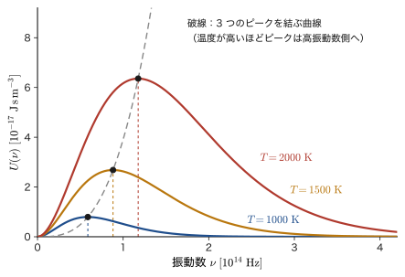
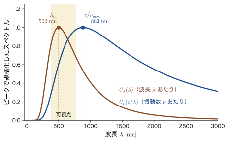
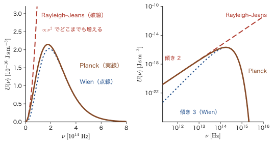
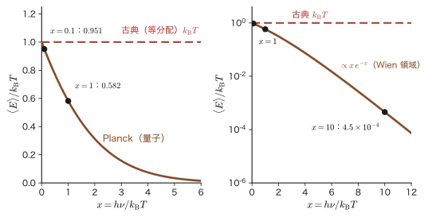
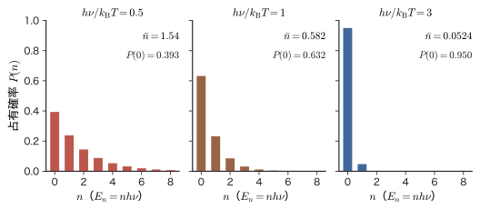
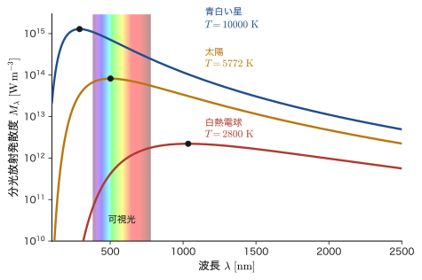

第3章黒体放射と量子の発見 — Wien・Rayleigh–Jeans・Planck
鉄の棒を炉に入れて熱していくと，はじめは何も見えないが，やがて暗い赤，橙，黄，そして白っぽい光へと，光り方が変わっていく．製鉄所やガラス工場の職人は，昔から炉の中の「色」を見て温度を判断してきた．熱い物体が出す光の色は，物体の種類によらず，ほぼ温度だけで決まる．この経験則の背後には，物質の種類によらない普遍的な法則がある．それを 1859 年に Kirchhoff（キルヒホッフ）が指摘して以来，物理学者は「温度 $T$ の物体が出す電磁波の，振動数ごとの強さ $U(\nu)$ はどんな関数か」を突き止めようとした．
19 世紀末に測定が精密になると，この関数の形が実験でわかってきた．ところが，当時すでに完成していた 2 本の柱，Maxwell（マクスウェル）の電磁気学と Boltzmann（ボルツマン）の統計力学だけからこの関数を計算すると，高振動数（紫外）で無限大になってしまい，実験と全く合わない（紫外破綻）．この破綻を救うために，1900 年に Planck（プランク）が導入したのが，「振動数 $\nu$ の電磁波のエネルギーは $h\nu$ の整数倍の値しかとれない」という，古典物理では説明できない仮説である．この $h$ が Planck 定数であり，この仮説が量子力学の出発点になった．第I部で見た「古典物理の常識が通じない」という感覚は，歴史的には，こうした一見小さな実験と理論の食い違いから 1 つずつ見つかったのである．この章は，実験事実 → 古典理論の破綻 → Planck の解決の順に，式を 1 行も飛ばさずにたどる．
そのあと Planck の式から，Wien（ウィーン）の変位則と Stefan–Boltzmann（シュテファン–ボルツマン）の法則を導き，太陽の色，地球の温度，白熱電球の効率，宇宙背景放射，放射温度計といった，材料・エネルギー・宇宙にまたがる話題に使ってみる．数学と統計力学の側面は，姉妹編の大学数学（AD 02）第49章（49.2〜49.5）と大学基礎物理学（AD 03）第53章（53.2〜53.6）でも扱った．本章は，物理の歴史（Kirchhoff → Wien → Rayleigh–Jeans → Planck）を軸に，それらと重なる部分も含めて，最初から書き直したものである．なお，スペクトル密度 $U(\nu)$ は，AD 02 の $E(\nu)$，AD 03 の $u(\nu,T)$ と同じ量である．Boltzmann 定数は，波数 $k$ と区別するために $k_{\mathrm{B}}$ と書く．
この部の見取り図：第II部 量子論の黎明期（第3章〜第8章）
第II部では，量子論が生まれた 1859 年から 1927 年ごろまでの道のりを，実験事実を軸に歴史の順にたどる．各章の役割は次のとおりである．
| 章 | 年代 | 何が見つかったか |
|---|---|---|
| 第3章 黒体放射 | 1859–1900 | 熱放射のスペクトルの実験法則（Kirchhoff，Wien）と古典論の破綻，Planck の量子仮説：電磁波のエネルギーは $h\nu$ を単位とする |
| 第4章 光電効果 | 1905 | Einstein の光子説：光は $E=h\nu$ をもつ粒子として振る舞う |
| 第5章 原子スペクトルと Bohr 模型 | 1885–1925 | 原子のエネルギーはとびとびの値をとる．前期量子論の量子条件 |
| 第6章 Compton 散乱と物質波 | 1923–1927 | 光子は運動量 $h/\lambda$ をもつ．de Broglie：電子も波．電子線の回折 |
| 第7章 スリットを通る電子 | 1961–2019（電子・分子の干渉実験） | 1 個ずつ飛ぶ電子が干渉縞を作る：波動性と確率 |
| 第8章 量子力学の公理 | 1926–1927 | Born の確率解釈，交換関係，不確定性原理．第III部の Schrödinger 方程式へ |
本章の $h$ は，第4章では光のエネルギーの最小単位 $E=h\nu$，第5章では角運動量の単位 $\hbar=h/2\pi$，第6章では波長との関係 $p=h/\lambda$，第8章では不確定性 $\Delta x\,\Delta p\ge\hbar/2$ として，次々に姿を変えて現れる．第I部で感じた「なぜ量子力学は難しいのか」（第1章）への答えは，この 1 つの定数 $h$ を追いかけていくと，しだいに見えてくる．
- 熱放射，黒体，Kirchhoff の法則の意味と，スペクトル密度 $U(\nu)$ の意味（単位体積・単位振動数あたりのエネルギー）
- Wien の変位則 $\lambda_mT=b$ と，波長で見るか振動数で見るかでスペクトルのピークの位置が変わる理由
- 箱の中の定在波を数えてモード密度 $8\pi\nu^2/c^3$ を導き，1 モードあたり $k_{\mathrm{B}}T$ とする古典論から Rayleigh–Jeans の式を得ること．そしてそれが紫外で破綻すること
- Planck の量子仮説 $E=nh\nu$ から，等比級数と微分のトリックで $\langle E\rangle=h\nu/(e^{h\nu/k_{\mathrm{B}}T}-1)$ と Planck の式を導くこと
- Planck の式から Wien の変位則（$x=2.8214$ と $4.9651$）と Stefan–Boltzmann の法則（$\sigma_{\mathrm{SB}}=2\pi^5k_{\mathrm{B}}^4/15h^3c^2$）を導き，$h$ と $k_{\mathrm{B}}$ を実験値から決めること
- 太陽の色，白熱電球の効率，地球の平衡温度，宇宙背景放射，二色放射温度計を，黒体放射で見積もること
もとにしたノート：望月泰英『物理学ノート 量子力学1』 pp. 6–8，および Planck の公式を導いたページ（ノートの写真）．
3.1 熱放射と黒体 — 光る物体と空洞放射
3.1.1 熱い物体は光る — 熱放射
電気ストーブのヒーターは，温度が上がると暗い赤色に光る．白熱電球のフィラメントは約 $2800\ \mathrm{K}$（$\mathrm{K}$ は絶対温度の単位，$0\ ^\circ\mathrm{C}=273.15\ \mathrm{K}$）まで熱せられて，黄白色に光る．太陽の表面（約 $5800\ \mathrm{K}$）は白く輝く．このように，物体は温度が高いと光を出す．これを熱放射（thermal radiation）という．しかも，光って見えるのは高温の物体だけではない．人間の体（約 $310\ \mathrm{K}$）も，目に見えない赤外線を出していて，サーモグラフィはそれを撮影する装置である．つまり，すべての物体は，その温度に応じた電磁波を出している．
温度を上げていったとき，物体が出す電磁波は，次の 2 つの点で変化する．第 1 に，出る光の総量が増える．第 2 に，光の成分（どの振動数の光がどれだけ含まれるか）が変わり，低温では赤外線が多く，温度が上がるにつれて可視光の割合が増え，赤，橙，黄，白へと色が変わっていく．この「振動数ごとの光のエネルギー」が，温度の上昇に従ってどのようになるのかを知るために行われたのが，黒体放射の実験である．この章の目標は，この実験結果を説明する理論を組み立てることである．そして，その過程で，古典物理学（Newton 力学・Maxwell の電磁気学・Boltzmann の統計力学）の限界が見つかり，量子力学が生まれる．
3.1.2 スペクトル密度 $U(\nu)$ — 何を測っているのか
まず，測る量をはっきり決めよう．熱放射の実験では，空洞（壁で囲まれた空間）の中を満たす電磁波を考える．電磁波は，単位体積あたりいくらのエネルギーをもっているか．さらに，そのエネルギーは，どの振動数の電磁波が担っているか．これを表すのが次の量である．
定義3.1 スペクトル密度 $U(\nu)$
温度 $T$ の熱平衡にある空洞の中で，単位体積あたり，振動数が $\nu$ から $\nu+\dd\nu$ の間にある電磁波のエネルギーを $U(\nu)\,\dd\nu$ と書き，$U(\nu)$ をスペクトル密度（spectral energy density）という．温度を明示したいときは $U(\nu,T)$ と書く．単位は $\mathrm{J\,m^{-3}\,Hz^{-1}}=\mathrm{J\,s\,m^{-3}}$ である．振動数 $\nu$ は 1 秒間の振動の回数（単位 $\mathrm{Hz}$），$\omega=2\pi\nu$ が角振動数，波長は $\lambda=c/\nu$（$c$ は光速）である．全振動数にわたるエネルギー密度は $u=\displaystyle\int_0^\infty U(\nu)\,\dd\nu$ である．
$U(\nu)$ に $\dd\nu$ を掛けて初めてエネルギー（の密度）になる点に注意してほしい．$U(\nu)$ 自体は「振動数の幅 $1\ \mathrm{Hz}$ あたり」の量であり，$\nu$ で積分すると全エネルギー密度になる．同様に，波長で数える量 $U_\lambda(\lambda)$（単位波長あたり）も後で使う（3.2 節）．この量は AD 02 では $E(\nu)$，AD 03 では $u(\nu,T)$ と書かれていたものと同じである．
問い：縦軸は何を数えているのか
実験結果のグラフ（3.2 節の図3.2）の縦軸には，「光の振動数ごとのエネルギー」を表す量をとる．これを「その振動数の光の波の数」と考えたくなるかもしれないが，そうではない．縦軸はエネルギー密度 $U(\nu)$ であって，波の数ではない．波の数とエネルギーの関係は次のようになっている．振動数 $\nu$ 付近には，空洞の中で独立に振動できる電磁波の型（モード，mode）がたくさんあり，その数（単位体積・単位振動数あたり）を $g(\nu)$ とすると，1 つのモードがもつ平均エネルギーを $\langle E\rangle$ として
$$ U(\nu)=g(\nu)\,\langle E\rangle $$となる．「光の波の数」に対応するのは $g(\nu)$ のほうである．つまり，縦軸の値は，波の数（$g$）と，1 つの波が平均でもつエネルギー（$\langle E\rangle$）の積で決まる．この分解が，Rayleigh–Jeans の式（3.3 節）と Planck の式（3.4 節）を理解するための鍵になる．$g(\nu)$ の求め方は 3.3.4 節で，$\langle E\rangle$ の求め方は 3.3.5 節（古典論）と 3.4 節（量子論）で行う．
3.1.3 黒体 — 光を完全に吸収する理想物体
実験では，物質の種類によって放射の強さが違っては困る．どんな物体でも，光を出すと同時に外から来た光を吸収したり反射したりするので，「物体が出す光」を測っても，その物体の性質（表面が白いか黒いか，など）が混ざってしまう．そこで，物質の細かい性質によらない「理想物体」を考える．
定義3.2 黒体
あらゆる波長（振動数）の光を吸収し，光の反射率が $0$ である理想的な物体を黒体（black body）という．
吸収率（入射した光のうち吸収される割合）を $\mathcal{A}(\nu,T)$ と書くと，黒体では，すべての振動数で $\mathcal{A}=1$ である．「黒体」という名前は，外から来た光を全部吸収する（反射しない）ことに由来する．黒体が黒く見えるとは限らないことに注意しよう．黒体が高温になれば，自分で光を出して赤や白に輝く．太陽は，ほぼ黒体とみなせる天体の代表である．黒体は光を反射しないという点で黒いだけで，出す光の色は温度で決まる．
3.1.4 実験の目的 — 箱に開けた小さな穴
それでは，黒体を実際にどうやって作るのか．実験の目的とその論法を，順を追って整理しよう．
- 黒体も物体であるから，熱をもっていれば電磁波を放出する．
- そして黒体は，すぐにその電磁波を吸収する．
- ⇩ すると，放射量と吸収量がつり合う平衡状態になる．
- ⇩ これを利用して，黒体（に近い）の箱に穴を開けて，そこからの平衡状態の電磁波を調べる．
図3.1 は，この実験の考え方を表している．内側の壁が光をよく吸収する箱を熱すると，壁が電磁波を出し，その電磁波は箱の中で反射を繰り返しながら，また壁に吸収される．温度が上がると（図3.1 の (b)），より多くの電磁波が放出され，同時に吸収され続ける．放出される量と吸収される量がつり合ったとき，箱の中の電磁波は温度 $T$ の熱平衡状態にある．
箱の壁に小さな穴を開け，そこから漏れ出る電磁波を分光器で調べれば，箱の中の平衡状態の電磁波のスペクトルがわかる．穴が十分小さければ，穴から漏れる電磁波は箱の中の平衡をほとんど乱さない．しかも，この穴自体が黒体の役割を果たす．穴から入った光は，箱の内側の壁で何度も反射しながら少しずつ吸収され，穴から再び出てくる前にほとんどが吸収されてしまう．外から見ると，穴は「入った光を全部吸収する」，つまり黒体である．この空洞放射（cavity radiation）が，黒体放射の実験に使われる．
例題3.1 穴が黒体になる理由 — 空洞の実効吸収率
内壁の面積が全部で $S_{\mathrm{wall}}$ の空洞に，面積 $a_{\mathrm h}$ の小さな穴が開いている．壁は入射した光の割合 $\rho$ を反射し，残りの割合 $1-\rho$ を吸収するとする．反射は拡散的（向きがでたらめ）で，壁で反射した光が穴に入って外へ逃げる確率は，穴が内壁全体に占める割合 $f=a_{\mathrm h}/S_{\mathrm{wall}}$ に等しいとする．穴から入った光が，最終的に空洞の中で吸収される確率（実効吸収率）$\alpha_{\mathrm{eff}}$ を求めよ．また，(i) 白い磁器（$\rho=0.9$），(ii) 煤（すす）を塗った壁（$\rho=0.05$）で，$f=0.01$ のときの値を求めよ．
解答 光が壁に当たるごとに，(a) 確率 $1-\rho$ で吸収されて終わる，(b) 確率 $\rho$ で反射され，反射後に確率 $f$ で穴から逃げ，確率 $1-f$ で次の壁に当たる．最初に壁に当たってから最終的に逃げ出す確率を $P$ とすると，当たった後の確率は，(b) で逃げるか，逃げずにもう一度壁に当たって（そこからは初めと同じ状況で）逃げるかなので
$$ P=\rho\,f+\rho\,(1-f)\,P\qquad\therefore\quad P=\frac{\rho f}{1-\rho(1-f)} $$となる（右の式は $P$ について解いた．左の式の第 1 項は 1 回目の反射で逃げる場合，第 2 項は逃げずに 2 回目以降に持ち越す場合である．$\rho(1-f)\lt1$ なので，この $P$ を繰り返し代入した無限等比級数 $\rho f\sum_{k=0}^\infty[\rho(1-f)]^k$ が収束して同じ値を与える）．吸収される確率は $1-P$ だから
$$ \alpha_{\mathrm{eff}}=1-P=\frac{1-\rho(1-f)-\rho f}{1-\rho(1-f)}=\frac{1-\rho}{1-\rho+\rho f} $$である．(i) $\rho=0.9$，$f=0.01$ のとき，$\alpha_{\mathrm{eff}}=\dfrac{0.1}{0.1+0.9\times0.01}=\dfrac{0.1}{0.109}=0.917$．(ii) $\rho=0.05$，$f=0.01$ のとき，$\alpha_{\mathrm{eff}}=\dfrac{0.95}{0.95+0.05\times0.01}=\dfrac{0.95}{0.9505}=0.9995$．
壁の吸収率は (i) で $0.1$，(ii) で $0.95$ だが，穴の実効吸収率は (i) で $0.917$，(ii) で $0.9995$ と，壁自身よりはるかに $1$ に近い．$f\to0$（穴を小さくする）と $\alpha_{\mathrm{eff}}\to1$ になるので，穴は壁の材質によらず黒体に近づく．(i) の白い磁器でも，穴の割合を $f=0.001$ にすれば $\alpha_{\mathrm{eff}}=0.9911$ となる．
3.1.5 Kirchhoff の熱放射の法則 — 黒体のスペクトルは物質によらない
ここで大切な疑問が出る．空洞放射のスペクトルは，空洞を作る材料や形によって違わないのだろうか．もし違うなら，「黒体放射のスペクトル」という普遍的な関数を探す意味がない．この疑問に答えたのが，1859 年から 1860 年にかけての Kirchhoff の考察である．
法則3.1 Kirchhoff の熱放射の法則
熱平衡にある物体について，振動数 $\nu$ の光の放射発散度（「射出能」ともいう）$M(\nu,T)$（単位表面積・単位時間・単位振動数あたりに放出するエネルギー．放射性物質の「放射能」radioactivity とは別の量である）と吸収率 $\mathcal{A}(\nu,T)$（入射した光のうち吸収される割合）の比は，物体の材質・形・表面の状態によらず，$\nu$ と $T$ だけで決まる普遍関数である：
$$ \frac{M(\nu,T)}{\mathcal{A}(\nu,T)}=M_{\mathrm{bb}}(\nu,T)\qquad\Bigl(=\frac{c}{4}\,U(\nu,T)\Bigr) $$$\mathcal{A}=1$ の黒体では $M=M_{\mathrm{bb}}$ だから，右辺は黒体の放射発散度である．括弧内の $\dfrac{c}{4}U$ は，空洞放射のスペクトル密度 $U(\nu,T)$ との関係で，因子 $\dfrac{c}{4}$ は 3.5.2 節で導く．
導出（要点）
物体 A を，壁が温度 $T$ に保たれた空洞に入れる．空洞の中の放射は熱平衡にあり，そのスペクトル密度を $U(\nu,T)$ とする．放射は等方的で，A の表面には単位面積・単位時間・単位振動数あたり $\dfrac{c}{4}U(\nu,T)$ のエネルギーが入射する．A はその割合 $\mathcal{A}(\nu,T)$ だけを吸収する．熱平衡では A の温度は $T$ のままで，振動数ごとに吸収と放出がつり合う（つり合わなければ，A と空洞の間に，特定の振動数だけで熱の流れが生じてしまう）．したがって A の放射発散度は $M=\mathcal{A}\cdot\dfrac{c}{4}U$，すなわち
$$ \frac{M(\nu,T)}{\mathcal{A}(\nu,T)}=\frac{c}{4}\,U(\nu,T) $$である．右辺は A の性質を含まない．さらに，空洞の材質や形が変わっても $U(\nu,T)$ は同じでなければならない．もし，同じ温度の 2 つの空洞 X，Y でスペクトルが違えば，ある振動数だけを通す薄い窓で X と Y をつなぐと，同じ温度の 2 つの物体の間に熱が自発的に流れることになり，熱力学第二法則に反する．よって $U(\nu,T)$ は，空洞の性質によらない $\nu$ と $T$ だけの関数である．
（導出終わり）
Kirchhoff の法則から，次の 2 つのことがわかる．(1) 黒体放射のスペクトル $U(\nu,T)$ は，材料によらない普遍的な関数である．したがって，「この関数を求めよ」という問題が，物理学の重要な問題として成り立つ．(2) 一般の物体の放射発散度は $M=\varepsilon\,M_{\mathrm{bb}}$ と書ける．ここで $\varepsilon=\mathcal{A}$ は放射率（emissivity，真空の誘電率 $\varepsilon_0$ とは別の量）で，$0\le\varepsilon\le1$ である．よく光を吸収する物体ほどよく光る．逆に，光をよく反射する物体（磨いた金属）は，光りにくい．
1899〜1900 年に，Lummer（ルマー）と Pringsheim（プリングスハイム）らが，電気炉で加熱した空洞の穴から出る放射を高い精度で測定し，$U(\nu,T)$ の実験曲線を与えた．次節ではその結果を見る．
応用：赤熱する材料，放射温度計，放射率の材料差
金属を焼き入れる職人は，鋼が「暗い赤」「桜色」「橙」に光る色で温度を読んできた．溶鉱炉やガラス炉の中の温度も，炉の穴から見える光で測る．これらは，黒体放射の性質を使った温度測定である．現代の放射温度計は，物体が出す赤外線を検出し，温度に換算する．測る物体が黒体でなければ，放射率 $\varepsilon\lt1$ の分だけ放射が弱く，そのままでは温度を低く読んでしまう．放射率は材料で大きく異なり，磨いた金属の表面では $0.1$ 以下と小さく，酸化した金属やセラミックス，ガラスなどでは約 $0.8$〜$0.9$ と大きい．放射温度計で反射の強い金属表面を測るときは，放射率の補正が必要になる（例題3.14 の二色放射温度計は，この問題を避ける工夫の 1 つである）．
3.2 Wien の変位則 — 温度とスペクトルのピーク
3.2.1 実験の結果 — 穴から漏れる電磁波の分布
3.1 節の方法で，黒体の穴から漏れ出る電磁波を分光器で調べると，図3.2 のような分布が得られる．縦軸は，振動数が $\nu$ 付近の電磁波が運ぶエネルギー密度 $U(\nu)$，横軸は振動数 $\nu$ である．温度の異なる 3 本の曲線（$1000\ \mathrm{K}$，$1500\ \mathrm{K}$，$2000\ \mathrm{K}$）を重ねてある．穴から出る光の強さは，空洞の中のスペクトル密度 $U(\nu)$ に比例する（比例係数 $c/4$ は 3.5.2 節で導く）ので，測定される曲線の形は $U(\nu)$ と同じである．なお，図3.2 の曲線は，実測の曲線をよく再現する 3.4 節の式から計算して描いた．

実験結果である分布からわかることは，次のとおりである．
- どの温度でも，スペクトルは $\nu=0$ から立ち上がり，1 つのピークをもったのち，高振動数側でゆるやかに減少する．
- 温度が上がると，どの振動数でも $U(\nu)$ は大きくなり（曲線どうしは交わらない），放出される光の総量が増える．
- 温度上昇にともなって，放出される光のスペクトルのピークが高振動数側に移動する．
赤熱した鉄が，温度が上がると橙，黄，白へと色を変えるのは，最後の点，ピークの移動の現れである．図3.2 の温度範囲では，ピークは赤外領域にあるが（$1000\ \mathrm{K}$ で $\nu\approx5.9\times10^{13}\ \mathrm{Hz}$，$2000\ \mathrm{K}$ で $1.2\times10^{14}\ \mathrm{Hz}$，可視光は $4\times10^{14}$〜$8\times10^{14}\ \mathrm{Hz}$），高振動数側の裾が可視域にかかり，その分だけ赤く見える．
3.2.2 Wien の変位則 — ピークの波長は温度に反比例する
Wien（ヴィルヘルム・ウィーン）は，この結果をもう一歩進めて，ピークの位置が温度とどう関係するかを調べた．分光器の実験では，スペクトルを波長 $\lambda$ の関数として測ることが多いので，波長で数えたスペクトル密度を導入する．
定義3.3 波長基準のスペクトル密度 $U_\lambda(\lambda)$
単位体積あたり，波長が $\lambda$ から $\lambda+\dd\lambda$ の間にある電磁波のエネルギーを $U_\lambda(\lambda)\,\dd\lambda$ と書く．同じ電磁波のエネルギーを振動数と波長のどちらで数えても等しいので，$\nu=c/\lambda$，$\abs{\dd\nu}=(c/\lambda^2)\dd\lambda$ を使って
\begin{equation} U_\lambda(\lambda)\,\dd\lambda=U(\nu)\,\abs{\dd\nu}\qquad\therefore\quad U_\lambda(\lambda)=\frac{c}{\lambda^2}\,U\!\left(\frac{c}{\lambda}\right) \label{eq:3-Ulam} \end{equation}である．
物体が放出する光のスペクトル密度 $U_\lambda$ が最も大きくなる波長 $\lambda_m$ は，絶対温度 $T$ に反比例する．この関係は，Wien が 1893 年に熱力学の議論から導いたもので（3.2.4 節），比例定数 $b$ の値は実験で決まり，その後 Lummer と Pringsheim による空洞放射の測定や Paschen（パッシェン）らの測定で確かめられた．
法則3.2 Wien の変位則
黒体放射のスペクトル密度（波長基準）が最大になる波長 $\lambda_m$ は，絶対温度 $T$ に反比例する：
\begin{equation} \lambda_m=\frac{b}{T}\qquad\text{すなわち}\quad \lambda_mT=b \label{eq:3-wien} \end{equation}比例定数 $b=2.897\,771\,955\times10^{-3}\ \mathrm{m\,K}$（$\approx2.90\times10^{-3}\ \mathrm{m\,K}$）を Wien の変位則の定数という．
温度が 2 倍になれば，ピークの波長は半分になる．図3.2 の曲線の「変位」（ずれ）が温度に比例（波長では反比例）して起こることから，変位則（displacement law）と呼ばれる．この $b$ は，3.5.1 節で Planck の式から $b=hc/(4.9651\,k_{\mathrm{B}})$ と導かれる（1893 年の Wien の議論では，比例定数 $b$ の値は実験で決めるほかなかった）．
3.2.3 $\nu_m=c/\lambda_m$ の意味 — 波長で見るか，振動数で見るか
式 \eqref{eq:3-wien} を変形して，波長 $\lambda_m$ の光の振動数 $\nu_m=c/\lambda_m$ を求めると
\begin{equation} \nu_m=\frac{c}{\lambda_m}=\frac{c}{b}\cdot T\qquad(c:\text{光速}) \label{eq:3-nu-m} \end{equation}となる．$c/b=1.0346\times10^{11}\ \mathrm{Hz/K}$ なので，$\nu_m$ は温度に比例する．これは，温度が上がるほどピークの光の振動数が高くなることを表す．ただし，この式の $\nu_m$ の意味には注意が必要である．
注意：$c/\lambda_m$ は，振動数で描いたスペクトルのピークではない
式 \eqref{eq:3-nu-m} の $\nu_m=c/\lambda_m$ は，波長で描いたスペクトル $U_\lambda(\lambda)$ のピークの波長 $\lambda_m$ の光の振動数である．これを，図3.2 のように振動数を横軸にとったスペクトル $U(\nu)$ のピークの振動数 $\nu_{\max}$ と混同してはいけない．両者は一致しない．3.5.1 節で導くように，Planck の式に対して
$$ \nu_{\max}=2.8214\,\frac{k_{\mathrm{B}}T}{h}=5.879\times10^{10}\ \mathrm{Hz/K}\times T,\qquad \frac{c}{\lambda_m}=4.9651\,\frac{k_{\mathrm{B}}T}{h}=1.0346\times10^{11}\ \mathrm{Hz/K}\times T $$であり，$c/\lambda_m$ は $\nu_{\max}$ の約 $1.76$ 倍（$=4.9651/2.8214$）になる．どちらも温度に比例するので，「温度が上がるとピークが高振動数側へ動く」という結論そのものは変わらない．違いは，同じ光のエネルギーを波長で数えるか，振動数で数えるかによって，スペクトルの形が変わるためである．
この違いを図3.3 で見よう．太陽の表面温度に近い $T=5772\ \mathrm{K}$ の黒体について，波長基準のスペクトル $U_\lambda(\lambda)$ と，振動数基準のスペクトル $U(\nu)$ を波長 $\lambda=c/\nu$ の軸に写したものを，それぞれの最大値で規格化して重ねてある．前者のピークは $502\ \mathrm{nm}$，後者のピークは $c/\nu_{\max}=883\ \mathrm{nm}$ にあり，まったく違う位置にある．

イメージ：なぜ「数え方」でピークが動くのか
ある光のエネルギーの分布は，1 つの物理的な実体である．しかし，それを「横軸のどんな細切れごとにいくら」と表すかによって，グラフの形が変わる．波長 $\lambda$ 付近の幅 $\Delta\lambda$ の切れ端に対応する振動数の幅は $\Delta\nu=(c/\lambda^2)\Delta\lambda$ であり，短波長ほど大きい．同じ切れ端に含まれるエネルギーは変わらないので，波長の幅で割った値 $U_\lambda$ は，振動数の幅で割った値 $U$ より短波長側でかさ上げされる．その結果，波長で数えたピークは，振動数で数えたピークより短波長側（高振動数側）に寄る．次の例題は，この効果を最も極端な場合で示している．
例題3.2 同じ光でも，数え方で「ピーク」が変わる
エネルギー密度が振動数について一様，すなわち $4.0\times10^{14}\ \mathrm{Hz}\le\nu\le8.0\times10^{14}\ \mathrm{Hz}$ で $U(\nu)=U_0$（定数），この範囲の外では $0$ であるようなスペクトルを考える（可視光の範囲にほぼ対応する）．(a) 波長基準のスペクトル $U_\lambda(\lambda)$ を求め，最大になる波長を答えよ．(b) 全エネルギーのちょうど半分が含まれる振動数 $\nu_{1/2}$ と波長 $\lambda_{1/2}$ を求め，$\lambda_{1/2}=c/\nu_{1/2}$ となることを確かめよ．
解答 (a) $\nu_1=4.0\times10^{14}\ \mathrm{Hz}$，$\nu_2=8.0\times10^{14}\ \mathrm{Hz}$ に対応する波長は，$\lambda_1=c/\nu_2=3.747\times10^{-7}\ \mathrm{m}=374.7\ \mathrm{nm}$，$\lambda_2=c/\nu_1=749.5\ \mathrm{nm}$ である．式 \eqref{eq:3-Ulam} より，$\lambda_1\le\lambda\le\lambda_2$ で
$$ U_\lambda(\lambda)=\frac{c}{\lambda^2}\,U_0 $$となる．これは $\lambda$ について単調に減少する関数なので，最大値は範囲の端の $\lambda=\lambda_1=374.7\ \mathrm{nm}$ にとる．一方，$U(\nu)$ は一様で，特別な「ピーク」をもたない．同じ光の分布なのに，振動数基準では平らな台地，波長基準では短波長端が最大の右下がりの曲線になり，「最も強い成分」の位置が変わってしまう．
(b) 全エネルギーは $U_0(\nu_2-\nu_1)$ である．振動数で数えると，$\nu_1$ から $\nu_{1/2}$ までのエネルギーが半分になる条件は $U_0(\nu_{1/2}-\nu_1)=\dfrac12U_0(\nu_2-\nu_1)$，すなわち $\nu_{1/2}=\dfrac{\nu_1+\nu_2}{2}=6.0\times10^{14}\ \mathrm{Hz}$ で，対応する波長は $c/\nu_{1/2}=499.6\ \mathrm{nm}$ である．波長で数えると，$\lambda_1$ から $\lambda_{1/2}$ までのエネルギーは $\displaystyle\int_{\lambda_1}^{\lambda_{1/2}}\frac{cU_0}{\lambda^2}\dd\lambda=cU_0\left(\frac1{\lambda_1}-\frac1{\lambda_{1/2}}\right)$ で，これが全体の半分 $\dfrac12cU_0\left(\dfrac1{\lambda_1}-\dfrac1{\lambda_2}\right)$ に等しい条件から，$\dfrac1{\lambda_{1/2}}=\dfrac12\left(\dfrac1{\lambda_1}+\dfrac1{\lambda_2}\right)$，すなわち $\dfrac{c}{\lambda_{1/2}}=\dfrac{\nu_2+\nu_1}{2}$ を得る．よって $\lambda_{1/2}=c/\nu_{1/2}=499.6\ \mathrm{nm}$ となり，振動数で数えても波長で数えても，エネルギーの半分を分ける位置は同じ光である．ピーク（分布の最大値の位置）は数え方に依存するが，「エネルギーの半分を分ける位置」はそうではない．
3.2.4 Wien の理論的考察と Wien の輻射式
Wien は，1893 年に熱力学から次の議論を行った．空洞を断熱的に膨張・圧縮させると（壁が動くとき，反射する光は Doppler 効果で振動数がずれる），スペクトルは次の形をしていなければならないことを示した．
\begin{equation} U(\nu,T)=\nu^3\,f\!\left(\frac{\nu}{T}\right) \label{eq:3-wien-scaling} \end{equation}ここで $f$ は，$\nu/T$ だけの関数である（Wien の変位則の理論的な形）．この形を認めれば，式 \eqref{eq:3-wien} が導かれる．
導出：スケーリング形から変位則へ
$y=\nu/T$ とおくと，式 \eqref{eq:3-wien-scaling} は $U=T^3y^3f(y)$ となる．温度 $T$ を固定して $\nu$ で微分すると，$\dfrac{\dd y}{\dd\nu}=\dfrac1T$ より
$$ \frac{\dd U}{\dd\nu}=T^3\,\frac{\dd\,[y^3f(y)]}{\dd y}\,\frac1T=T^2\,\frac{\dd\,[y^3f(y)]}{\dd y} $$である．ピークでは $\dd U/\dd\nu=0$ だから，$\dfrac{\dd\,[y^3f(y)]}{\dd y}=0$ となる．この方程式の解 $y=y_*$ は，関数 $f$ だけで決まる定数で，温度 $T$ を含まない．よって $\nu_{\max}/T=y_*$，すなわち $\nu_{\max}=y_*T$（ピークの振動数は温度に比例する）を得る．波長基準でも同様で，式 \eqref{eq:3-Ulam} に $\nu=c/\lambda$ を代入して
$$ U_\lambda(\lambda)=\frac{c}{\lambda^2}\left(\frac{c}{\lambda}\right)^3f\!\left(\frac{c}{\lambda T}\right)=\frac{c^4}{\lambda^5}\,f\!\left(\frac{c}{\lambda T}\right)=T^5\,\frac{c^4}{(\lambda T)^5}\,f\!\left(\frac{c}{\lambda T}\right) $$となり，$T^5$ を除くと $U_\lambda$ は積 $\lambda T$ だけの関数になる．したがって，温度を固定して $\lambda$ で微分して $0$ とおいた方程式の解は，$\lambda T=$ 定数 の形，すなわち $\lambda_mT=b$ となる．
（導出終わり）
スケーリング形 \eqref{eq:3-wien-scaling} だけからは，関数 $f$ の形も，定数 $y_*$（つまり $b$ の値）も決まらない．そこで Wien は 1896 年に，壁の分子が Maxwell の速度分布に従い，放射の振動数が分子の速さと結びつくという仮定から，$f$ を指数関数とする式を導いた（当時は $h$ も $k_{\mathrm{B}}$ も放射の理論に登場しておらず，下の $A_{\mathrm{W}}$，$\beta$ は実験で決める定数として扱われた）：
\begin{equation} U(\nu)=A_{\mathrm{W}}\,\nu^3\,e^{-\beta\nu/T}\qquad(A_{\mathrm{W}},\ \beta\text{ は定数}) \label{eq:3-wien-law} \end{equation}これが Wien の輻射式である．あとで見るように，$A_{\mathrm{W}}=8\pi h/c^3$，$\beta=h/k_{\mathrm{B}}$ とおけば，3.4 節で導く Planck の式の高振動数側の極限に一致する（このとき指数因子 $e^{-\beta\nu/T}=e^{-h\nu/k_{\mathrm{B}}T}$ は Boltzmann 因子にほかならない）．ただし，$h$ を含むこの解釈は Planck 以後の理解であって，1896 年の Wien はまだ知らなかった．Paschen（パッシェン）らによる短波長側（$1$〜$8\ \mathrm{\mu m}$ の赤外線）の精密な測定は，Wien の式によく合った．ところが，測定が長波長側に伸びると，式 \eqref{eq:3-wien-law} は実験からずれてくることがわかった（3.3.3 節）．
例題3.3 変位則で温度を読む
Wien の変位則 $\lambda_mT=b$（$b=2.898\times10^{-3}\ \mathrm{m\,K}$）を使って，次の物体が出す熱放射のピーク波長 $\lambda_m$ を求め，電磁波のどの領域にあたるかを答えよ．(a) 太陽の表面（$5772\ \mathrm{K}$），(b) 白熱電球のフィラメント（$2800\ \mathrm{K}$），(c) 溶鉱炉（$1500\ ^\circ\mathrm{C}$），(d) 人体（$310\ \mathrm{K}$），(e) 宇宙背景放射（$2.725\ \mathrm{K}$）．
解答 $\lambda_m=b/T$ に各温度を代入する．(c) は $T=1500+273=1773\ \mathrm{K}$ と換算する（$\mathrm{K}$ で割るので，温度は絶対温度で入れる）．
| 物体 | $T\ [\mathrm{K}]$ | $\lambda_m=b/T$ | 領域 |
|---|---|---|---|
| (a) 太陽の表面 | $5772$ | $\dfrac{2.898\times10^{-3}}{5772}=5.02\times10^{-7}\ \mathrm{m}=502\ \mathrm{nm}$ | 可視光（青緑） |
| (b) 白熱電球 | $2800$ | $\dfrac{2.898\times10^{-3}}{2800}=1.035\times10^{-6}\ \mathrm{m}=1.03\ \mathrm{\mu m}$ | 近赤外 |
| (c) 溶鉱炉 | $1773$ | $\dfrac{2.898\times10^{-3}}{1773}=1.63\times10^{-6}\ \mathrm{m}=1.63\ \mathrm{\mu m}$ | 近赤外 |
| (d) 人体 | $310$ | $\dfrac{2.898\times10^{-3}}{310}=9.35\times10^{-6}\ \mathrm{m}=9.35\ \mathrm{\mu m}$ | 赤外（熱赤外） |
| (e) 宇宙背景放射 | $2.725$ | $\dfrac{2.898\times10^{-3}}{2.725}=1.063\times10^{-3}\ \mathrm{m}=1.06\ \mathrm{mm}$ | マイクロ波 |
(a) 太陽のピークは可視光の真ん中付近にあり，人間の目の感度がもっとも高い波長（約 $555\ \mathrm{nm}$）に近い．(b) 白熱電球のピークは可視域（$380$〜$780\ \mathrm{nm}$）の外の近赤外にあり，放射の大半が赤外線になる（3.5.4 節の例題3.12）．(c) 溶鉱炉が赤く見えるのは，ピークは近赤外にあるが，可視域の赤い端に裾がかかっているためである．(d) 人体のピーク $9.35\ \mathrm{\mu m}$ はサーモグラフィが使う波長域（およそ $8$〜$14\ \mathrm{\mu m}$）に入っている．(e) 宇宙背景放射のピークは $1\ \mathrm{mm}$ 程度で，マイクロ波である．
応用：星の色，白熱灯とLED，物体の温度を「色」で読む
星の色は，表面温度を教えてくれる．Betelgeuse（ベテルギウス）のような赤い星（約 $3600\ \mathrm{K}$）はピークが赤外にあり，Sirius（シリウス）のような青白い星（約 $9940\ \mathrm{K}$）はピークが紫外にある（演習3.1）．同じ原理で，製鉄の現場では，光る鋼の色から温度を推定している．なお，白熱電球のフィラメントを $2800\ \mathrm{K}$ よりずっと高温にできれば，ピークを可視域に近づけて効率を上げられるが，金属の融点（タングステンで約 $3700\ \mathrm{K}$）が上限になる．
関連シミュレーター：Planck の公式（温度と光の色）．温度を入れると，黒体のスペクトルと目に映る色が表示される．
3.3 古典論の破綻 — Rayleigh–Jeans の式と紫外破綻
3.3.1 電磁波は古典的な波か — 熱放射のスペクトルの矛盾
ここまでは実験の話だった．次に，この実験結果を理論で説明できるかを考える．
Maxwell の方程式から，真空中の電場と磁場の振動が空間を伝わる波動，すなわち電磁波の解をもつことが予言される（導出は AD 03 第42章 42.3 節）．電磁波は 1888 年に Hertz（ヘルツ）が実験で発生・検出し，光は電磁波の一種であることが確立した．光は干渉や回折を起こす連続的な波である，というのが 19 世紀末の物理学の確固とした描像であった．
しかし，電磁波が古典的な波動であるという描写が破綻していることに気づいたのは，熱せられた物体の発する電磁波（熱輻射）のスペクトルに関する矛盾からだった．3.1 節のとおり，$U(\nu)=g(\nu)\langle E\rangle$（モードの数 × 1 モードの平均エネルギー）だから，古典物理学の 2 つの柱，つまり波としての電磁波（Maxwell）と熱平衡の統計（Boltzmann）だけを使えば，$U(\nu)$ が計算できるはずである．その計算を実際に行った Rayleigh（レイリー）と Jeans（ジーンズ）の結果が，次の式である．
3.3.2 Rayleigh–Jeans の式
公式3.1 Rayleigh–Jeans の式
古典的な電磁波と古典統計力学から得られる空洞放射のスペクトル密度は
\begin{equation} U(\nu)\,\dd\nu=\frac{8\pi\nu^2}{c^3}\cdot k_{\mathrm{B}}T\,\dd\nu \label{eq:3-rj} \end{equation}である．$k_{\mathrm{B}}$ は Boltzmann 定数（$k_{\mathrm{B}}=1.380\,649\times10^{-23}\ \mathrm{J/K}$）．
Rayleigh が $\nu^2T$ に比例する形を 1900 年に示し，Jeans が 1905 年に係数を正しく決めた．この式の導出（$8\pi\nu^2/c^3$ はどこから来て，$k_{\mathrm{B}}T$ はどこから来るのか）は 3.3.4 節と 3.3.5 節で行う．ここでは，この式の意味と単位を確認しておこう．$\dfrac{8\pi\nu^2}{c^3}$ の単位は $\dfrac{\mathrm{s^{-2}}}{\mathrm{m^3\,s^{-3}}}=\mathrm{s\,m^{-3}}$ で，これに $k_{\mathrm{B}}T$（エネルギー，単位 $\mathrm{J}$）を掛けると $\mathrm{J\,s\,m^{-3}}$ となり，定義3.1 のスペクトル密度 $U(\nu)$ の単位に一致する．式のとおり，古典論の答えは温度に比例し，振動数の 2 乗に比例する．
覚え方：$8\pi\,c^{-3}\,\nu^2$
この式の係数 $8\pi\,c^{-3}\,\nu^2$ は，語呂合わせで覚えられる：「やっぱ ミーさんは 乳児」．「やっ（8）ぱ（π）」が $8\pi$，「ミー（$c$）さん（3）」が $c^{-3}$（$c$ の $-3$ 乗），「にゅう（ニュー，$\nu$）じ（自乗，2 乗）」が $\nu^2$ である．あとは $k_{\mathrm{B}}T$ を掛けるだけである．「$8\pi$ が分子，$c^3$ が分母，$\nu^2$ が分子」と覚えておけば，Planck の式（3.4 節）の $\dfrac{8\pi h\nu^3}{c^3}$ とも見比べやすい．
3.3.3 実験との比較 — 紫外破綻
Rayleigh–Jeans の式を，実測のスペクトルと比べてみよう．図3.4 は，$T=3000\ \mathrm{K}$ の空洞放射について，Rayleigh–Jeans の式（破線），Wien の式（点線），そして実測を再現する Planck の式（実線，3.4 節）の 3 つを重ねたものである（左は普通の目盛り，右は両対数の目盛り）．

図3.4 からわかることをまとめる．
- 低振動数側（遠赤外）：Rayleigh–Jeans の式は実測によく合う．Rubens（ルーベンス）と Kurlbaum（クルルバウム）が 1900 年に，波長が数十 $\mathrm{\mu m}$ の遠赤外線で行った測定でも確かめられた．Wien の式（傾き $3$ の直線）は実測からずれていく．
- 高振動数側（可視・紫外）：Wien の式は実測によく合うが，Rayleigh–Jeans の式は実測を大きく上回り，$\nu$ とともにいくらでも増える．
Rayleigh–Jeans の式の困難は，全振動数にわたって足し合わせたときに明白になる．全エネルギー密度は
$$ u=\int_0^\infty U(\nu)\,\dd\nu=\frac{8\pi k_{\mathrm{B}}T}{c^3}\int_0^\infty\nu^2\,\dd\nu=\frac{8\pi k_{\mathrm{B}}T}{c^3}\left[\frac{\nu^3}{3}\right]_0^\infty=\infty $$と，無限大に発散してしまう．有限の温度の空洞が，無限のエネルギーをもつことになる．これは明らかに現実と矛盾する．高振動数（紫外側）で問題が起きるので，この困難を紫外破綻（ultraviolet catastrophe，Ehrenfest（エーレンフェスト）が 1911 年に名付けた）という．古典物理学（電磁波が連続的な波であり，エネルギーは連続的な値をとってよいとする描像）の内部に，解決できない矛盾があったのである．
補足：Planck の内挿式と量子仮説へ
この状況を，Planck は次のように打開した．1900 年 10 月 19 日，Planck は，Wien の式（高振動数側で正しい）と，Rubens（ルーベンス）と Kurlbaum（クルルバウム）の測定が示した低振動数側のふるまい（$U$ が温度 $T$ に比例する．のちに Rayleigh と Jeans が導いた式に当たる）を滑らかにつなぐ式（内挿式）を，実験データに合わせて見つけた．同年 12 月 14 日，ドイツ物理学会でその式の理論的な導出を発表した．そこで使われたのが，「エネルギーは $h\nu$ の整数倍」という仮説である．この日が，量子論の誕生日と呼ばれる．3.4 節で，この仮説を使った導出をたどる．
例題3.4 紫外破綻の大きさ — 室温の空洞に「無限のエネルギー」
温度 $T=300\ \mathrm{K}$ の空洞で，Rayleigh–Jeans の式が成り立つと仮定して，振動数 $\nu_{\mathrm c}=1\times10^{15}\ \mathrm{Hz}$（波長 $300\ \mathrm{nm}$ の紫外線）までのエネルギー密度 $u(\nu\le\nu_{\mathrm c})$ を求めよ．また，$\nu_{\mathrm c}=1\times10^{18}\ \mathrm{Hz}$（X 線）まで足すと，体積 $1\ \mathrm{m^3}$ あたりいくらのエネルギーになるか．実際の値（3.5.2 節の式 \eqref{eq:3-u-aT4} で求める $u=aT^4=6.1\times10^{-6}\ \mathrm{J/m^3}$）と比べよ．
解答 $u(\nu\le\nu_{\mathrm c})=\dfrac{8\pi k_{\mathrm{B}}T}{c^3}\displaystyle\int_0^{\nu_{\mathrm c}}\nu^2\,\dd\nu=\dfrac{8\pi k_{\mathrm{B}}T\,\nu_{\mathrm c}^3}{3c^3}$ である．$k_{\mathrm{B}}T=1.380649\times10^{-23}\times300=4.142\times10^{-21}\ \mathrm{J}$，$c^3=(2.998\times10^8)^3=2.694\times10^{25}\ \mathrm{m^3\,s^{-3}}$ を代入すると，$\nu_{\mathrm c}=1\times10^{15}\ \mathrm{Hz}$ で
$$ u=\frac{8\pi\times4.142\times10^{-21}\times(10^{15})^3}{3\times2.694\times10^{25}}=\frac{1.041\times10^{-19}\times10^{45}}{8.082\times10^{25}}=1.29\ \mathrm{J/m^3} $$となる．実際の値 $6.1\times10^{-6}\ \mathrm{J/m^3}$ の約 $2\times10^5$ 倍である．$\nu_{\mathrm c}$ を $10^3$ 倍にして $10^{18}\ \mathrm{Hz}$ にすると，$u\propto\nu_{\mathrm c}^3$ から $10^9$ 倍の $1.3\times10^{9}\ \mathrm{J/m^3}$ になる．これは，$1\ \mathrm{m^3}$ の空洞の中に，火薬（TNT）約 $300\ \mathrm{kg}$ に相当するエネルギー（$4.2\times10^6\ \mathrm{J/kg}$ で換算）が X 線として詰まっている，という意味である．$\nu_{\mathrm c}\to\infty$ ではこの値が無限大になる．
3.3.4 Rayleigh–Jeans の式の導出（その 1）— モードの数を数える
式 \eqref{eq:3-rj} を導こう．式の構造は $U(\nu)=g(\nu)\langle E\rangle$ である．まず，係数 $g(\nu)=8\pi\nu^2/c^3$，すなわち，単位体積あたり，振動数が $\nu$ から $\nu+\dd\nu$ の間にある電磁波のモード（独立な定在波）の数を数える．ここでの考え方は，弦楽器の弦の定在波（AD 03 第11章 11.7 節）を 3 次元に拡張したものである．詳しい計算は AD 02 第49章 49.5 節と AD 03 第53章 53.2 節にもあるが，ここでも最初から行う．
空洞と境界条件．1 辺 $L$ の立方体の空洞（体積 $V=L^3$）を考える．壁は電気をよく通す金属で，壁の上では電場の壁に平行な成分が $0$ になる．この境界条件を満たす電磁波は，向かい合う壁の間に半波長の整数倍がちょうど入るような定在波に限られる．弦の定在波と同様に，波数ベクトルの各成分は次のようになる．長さ $L$ の弦の両端（$x=0$，$x=L$）を固定すると，定在波は $\sin(k_xx)$ で，$x=L$ で $0$ になる条件 $\sin(k_xL)=0$ から $k_xL=\pi n_x$（$n_x=1,2,\dots$）となる．3 次元では，各方向の因子の積の形になる．たとえば電場の $x$ 成分は $E_x\propto\cos(k_xx)\sin(k_yy)\sin(k_zz)$ のように，壁に平行な方向（$y$，$z$）には $\sin$ で壁の上を $0$ にし，壁に垂直な方向（$x$）には $\cos$ をとる．$y$ 成分 $E_y$ は $\sin(k_xx)\cos(k_yy)\sin(k_zz)$，$z$ 成分 $E_z$ は $\sin(k_xx)\sin(k_yy)\cos(k_zz)$ の形になる．$E_y$，$E_z$ には $\sin(k_xx)$ が，$E_x$，$E_z$ には $\sin(k_yy)$ が，$E_x$，$E_y$ には $\sin(k_zz)$ が現れるので，対向する壁（$x=L$，$y=L$，$z=L$）の上で $0$ になる条件は，方向ごとに $\sin(k_xL)=0$，$\sin(k_yL)=0$，$\sin(k_zL)=0$ となる．結局
\begin{equation} k_x=\frac{\pi}{L}n_x,\quad k_y=\frac{\pi}{L}n_y,\quad k_z=\frac{\pi}{L}n_z\qquad(n_x,n_y,n_z=1,2,3,\dots) \label{eq:3-kn} \end{equation}と，とびとびの値だけをとる．波数の大きさは $k=\sqrt{k_x^2+k_y^2+k_z^2}=\dfrac{\pi}{L}\sqrt{n_x^2+n_y^2+n_z^2}$ である（波数 $k=2\pi/\lambda$ は，単位長さあたりの位相の進み［$\mathrm{rad/m}$］で，本書では添字なしの $k$ を波数に，Boltzmann 定数には $k_{\mathrm{B}}$ を使って区別する）．光の分散関係 $\omega=ck$ すなわち $2\pi\nu=ck$ より，振動数 $\nu$ は $\nu=\dfrac{ck}{2\pi}=\dfrac{c}{2L}\sqrt{n_x^2+n_y^2+n_z^2}$ となる．そこで
\begin{equation} n\equiv\sqrt{n_x^2+n_y^2+n_z^2}=\frac{2L\nu}{c} \label{eq:3-n} \end{equation}とおく．電磁波は横波（電場が進行方向に垂直，AD 03 第42章 42.4 節）なので，同じ波数ベクトルに対して，独立な偏光（電場の振動方向）が2 通りある（電場の振幅 $(E_1,E_2,E_3)$ が $\bm{k}$ に垂直，すなわち $k_xE_1+k_yE_2+k_zE_3=0$ を満たすという条件で，3 つの振幅のうち独立なものが 2 つに減る）．結局，図3.5 の格子点，すなわち整数の組 $(n_x,n_y,n_z)$ 1 個ごとに，独立な定在波（モード）が 2 個ある．
導出：モード密度 $g(\nu)=8\pi\nu^2/c^3$
振動数が $\nu$ 以下のモードの総数 $N(\nu)$ を数える．式 \eqref{eq:3-n} より，これは原点から距離 $n=2L\nu/c$ 以内にある格子点（$n_x,n_y,n_z\ge1$）の数の 2 倍（偏光）である．格子点は $(n_x,n_y,n_z)$ 空間に単位間隔で並んでいるので，格子点 1 個あたりの体積は $1$ であり，個数は体積に等しいとみなせる（$L$ が波長よりずっと大きいとき，$n$ は非常に大きく，この近似は非常によい．例題3.5）．$n_x,n_y,n_z\gt0$ の領域は，半径 $n$ の球の $1/8$ である．したがって
$$ N(\nu)=2\times\frac18\times\frac{4\pi}{3}n^3=\frac{\pi}{3}n^3=\frac{\pi}{3}\left(\frac{2L\nu}{c}\right)^3=\frac{8\pi L^3\nu^3}{3c^3}=\frac{8\pi V\nu^3}{3c^3} $$である．振動数が $\nu$ から $\nu+\dd\nu$ の間のモードの数は，$N(\nu)$ を $\nu$ で微分して $\dd\nu$ を掛けたもの，$\dfrac{\dd N}{\dd\nu}\dd\nu=\dfrac{8\pi V\nu^2}{c^3}\dd\nu$ である．体積 $V$ で割って単位体積あたりにすると
\begin{equation} g(\nu)\,\dd\nu=\frac{8\pi\nu^2}{c^3}\,\dd\nu \label{eq:3-g} \end{equation}を得る．
（導出終わり）
結果 \eqref{eq:3-g} には空洞の大きさ $L$ が含まれていない．モードの密度は，空洞の形や大きさによらず，体積だけで決まる（$L$ が波長より十分大きいとき）．なお，$n_x,n_y,n_z$ のどれかが $0$ の波も，偏光の数を 1 つ減らした形で存在するが，そうしたモードの数は体積でなく表面積に比例し，マクロな空洞では無視できる．さらに，周期境界条件（$e^{ik_xL}=1$ など，AD 03 53.2 節）で数えても，同じ結果になる．$g(\nu)\propto\nu^2$ の意味は，振動数が高いほど，波長が短く，同じ体積に入る定在波の種類が多い，ということである．
例題3.5 モードの数え上げ — $1\ \mathrm{cm^3}$ の空洞に入る可視光のモード
体積 $V=1\ \mathrm{cm^3}$ の空洞で，波長が $500\ \mathrm{nm}$ を中心に幅 $1\ \mathrm{nm}$ の範囲にある電磁波のモードは，偏光を含めて何個あるか．
解答 中心波長 $\lambda=500\ \mathrm{nm}$ の振動数は $\nu=c/\lambda=2.998\times10^8/(5.00\times10^{-7})=5.996\times10^{14}\ \mathrm{Hz}$．波長の幅 $\Delta\lambda=1\ \mathrm{nm}$ に対応する振動数の幅は，$\abs{\dd\nu}=(c/\lambda^2)\dd\lambda$ より
$$ \Delta\nu=\frac{c}{\lambda^2}\Delta\lambda=\frac{2.998\times10^8}{(5.00\times10^{-7})^2}\times1.0\times10^{-9}=1.20\times10^{12}\ \mathrm{Hz} $$である．式 \eqref{eq:3-g} に体積 $V=10^{-6}\ \mathrm{m^3}$ を掛けると（式 \eqref{eq:3-g} は偏光 2 通りを含んでいる）
$$ V\,g(\nu)\,\Delta\nu=\frac{8\pi V\nu^2\Delta\nu}{c^3}=\frac{8\pi\times10^{-6}\times(5.996\times10^{14})^2\times1.20\times10^{12}}{(2.998\times10^8)^3}\approx4.0\times10^{11} $$である（次元は $\mathrm{m^3\cdot s^{-2}\cdot s^{-1}}/(\mathrm{m^3\,s^{-3}})=1$ で，無次元の個数）．つまり，$1\ \mathrm{cm^3}$ の空洞の，たった $1\ \mathrm{nm}$ の波長の幅の中に，約 $4\times10^{11}$ 個ものモードがある．このため，モードの数を格子点の数から体積の比に置き換える近似には，まったく問題がない．
3.3.5 Rayleigh–Jeans の式の導出（その 2）— 1 つのモードの平均エネルギー
次に，$\langle E\rangle$，つまり 1 つのモードが平均でもつエネルギーを古典統計力学で求める．
1 つのモードは調和振動子である．空洞の中の 1 つの定在波を考えよう．その電場の大きさは $\cos\omega t$ に比例して，磁場の大きさは $\sin\omega t$ に比例して時間とともに振動し，電場のエネルギーと磁場のエネルギーが交互に入れ替わる（AD 03 第42章 42.5 節）．これは，ばねにつながれた質点の単振動で，運動エネルギーとばねの位置エネルギーが交互に入れ替わるのとまったく同じ構造である（AD 03 第7章 7.2 節）．したがって，1 つのモードのエネルギーは，質量 $m$，角振動数 $\omega=2\pi\nu$ の調和振動子と同じ形になる．このことを，次のように確かめる．モードの電場のエネルギーを $W_{\mathrm{E}}$，磁場のエネルギーを $W_{\mathrm{M}}$ とする．電場の大きさ（の振幅）を $a(t)=a_0\cos\omega t$，磁場の大きさ（の振幅）を $b(t)=b_0\sin\omega t$ とすると，エネルギーは場の大きさの 2 乗に比例するので $W_{\mathrm{E}}=\kappa_{\mathrm{E}}\,a^2$，$W_{\mathrm{M}}=\kappa_{\mathrm{M}}\,b^2$（$\kappa_{\mathrm{E}}$，$\kappa_{\mathrm{M}}$ は空洞の体積と定数 $\varepsilon_0$，$\mu_0$ で決まる正の定数）である．全エネルギー $\kappa_{\mathrm{E}}a_0^2\cos^2\omega t+\kappa_{\mathrm{M}}b_0^2\sin^2\omega t$ が時間によらず一定であるためには（エネルギー保存），$\kappa_{\mathrm{E}}a_0^2=\kappa_{\mathrm{M}}b_0^2$ でなければならない．そこで，電場に比例する量 $p\equiv\sqrt{2m\kappa_{\mathrm{E}}}\,a$ と，磁場に比例する量 $q\equiv\sqrt{2\kappa_{\mathrm{M}}/(m\omega^2)}\,b$ を定義すると（$m$ は任意の正の定数），$W_{\mathrm{E}}=p^2/2m$，$W_{\mathrm{M}}=\frac12m\omega^2q^2$ となり，全エネルギーは
\begin{equation} E=\frac{p^2}{2m}+\frac12m\omega^2q^2 \label{eq:3-Eosc} \end{equation}で書ける．ここで $q$ は一般化座標（振動の大きさを表す変数で，位置 $x$ とは限らない），$p$ は $q$ に共役な運動量である（質点の振動なら $q$ は位置，$p$ は運動量．電磁波の場合，$q$ と $p$ は上のように磁場と電場の振幅に比例する変数で，$m$ は形式的な定数であり，最終結果には現れない）．実際，$\kappa_{\mathrm{E}}a_0^2=\kappa_{\mathrm{M}}b_0^2$ から，$p=p_0\cos\omega t$，$q=q_0\sin\omega t$ の振幅の間に $p_0=m\omega q_0$ が成り立ち，$\dot q=\omega q_0\cos\omega t=p/m$，$\dot p=-\omega p_0\sin\omega t=-m\omega^2q$ となる．これは調和振動子の運動方程式（Hamilton の方程式）そのものである．結論に必要な性質だけを取り出せば，モードのエネルギーが2 つの変数の 2 乗の和で，角振動数 $\omega$ で振動する（したがって，次の統計平均に等分配則が使える）ということである．
Boltzmann 分布による平均．温度 $T$ の熱平衡では，状態 $(q,p)$ が実現する確率密度は Boltzmann 因子 $e^{-E/k_{\mathrm{B}}T}$ に比例する（AD 03 第50章 50.1 節）．よって，エネルギーの期待値（統計平均）は次のとおりである．
\begin{equation} \langle E\rangle=\frac{\displaystyle\iint E\,e^{-E/k_{\mathrm{B}}T}\,\dd p\,\dd q}{\displaystyle\iint e^{-E/k_{\mathrm{B}}T}\,\dd p\,\dd q} \label{eq:3-Eclass} \end{equation}ここで，$q$ と $p$ の積分は，どちらも $-\infty$ から $\infty$ まで行う．エネルギー $E$ は連続的な値をとってよい，というのが古典論の前提である．
導出：古典的な平均エネルギー $\langle E\rangle=k_{\mathrm{B}}T$
$\beta=1/k_{\mathrm{B}}T$ とおく．まず分母（分配関数）$Z=\iint e^{-\beta E}\dd p\,\dd q$ を計算する．$E$ の $p$ の部分と $q$ の部分が分かれているので，積分は積に分解できる．Gauss 積分 $\displaystyle\int_{-\infty}^\infty e^{-ax^2}\dd x=\sqrt{\pi/a}$（AD 02 第7章 7.5 節）を使うと，
$$ Z=\int_{-\infty}^\infty e^{-\beta p^2/2m}\dd p\int_{-\infty}^\infty e^{-\beta m\omega^2q^2/2}\dd q=\sqrt{\frac{2\pi m}{\beta}}\cdot\sqrt{\frac{2\pi}{\beta m\omega^2}}=\frac{2\pi}{\omega\beta} $$となる（1 つ目は $a=\beta/2m$，2 つ目は $a=\beta m\omega^2/2$）．次に分子は，$E\,e^{-\beta E}=-\dfrac{\partial}{\partial\beta}e^{-\beta E}$ を使うと，積分と微分の順序を交換して
$$ \iint E\,e^{-\beta E}\dd p\,\dd q=-\frac{\partial}{\partial\beta}\iint e^{-\beta E}\dd p\,\dd q=-\frac{\partial Z}{\partial\beta}=-\frac{\partial}{\partial\beta}\frac{2\pi}{\omega\beta}=\frac{2\pi}{\omega\beta^2} $$である．したがって
$$ \langle E\rangle=\frac{2\pi/(\omega\beta^2)}{2\pi/(\omega\beta)}=\frac{1}{\beta}=k_{\mathrm{B}}T $$を得る．
（導出終わり）
この結果には，質量 $m$ も角振動数 $\omega$ も現れない．$p^2$ の項と $q^2$ の項がそれぞれ $\dfrac12k_{\mathrm{B}}T$ を分けもち（エネルギー等分配則，AD 03 第50章 50.7 節），合わせて $k_{\mathrm{B}}T$ となる．つまり，古典論では，振動数が低いモードでも高いモードでも，どのモードも同じ平均エネルギー $k_{\mathrm{B}}T$ をもつ．
これで部品が揃った．単位体積あたりの，振動数が $\nu$ から $\nu+\dd\nu$ の間のエネルギーは，モードの数 \eqref{eq:3-g} と 1 モードの平均エネルギー $k_{\mathrm{B}}T$ の積で
$$ U(\nu)\,\dd\nu=g(\nu)\,\dd\nu\times\langle E\rangle=\frac{8\pi\nu^2}{c^3}\,\dd\nu\times k_{\mathrm{B}}T $$となり，Rayleigh–Jeans の式 \eqref{eq:3-rj} が得られた．
考察：どこがいけなかったのか
この導出には，2 つの仮定が使われている．(1) モードの数は $\nu^2$ に比例する（波として数えた結果で，実は正しい）．(2) どのモードも平均エネルギー $k_{\mathrm{B}}T$ をもつ（エネルギーが連続的な値をとることを前提にした等分配則）．振動数がどれほど高くなっても，モードの数は $\nu^2$ で増え続け，各モードに $k_{\mathrm{B}}T$ が割り当てられるので，エネルギーは無限に増える．高振動数のモードほど「エネルギーを受け取りにくい」という効果がどこかに必要である．Planck は，(2) の仮定，すなわちエネルギーの連続性を疑い，「エネルギーは $h\nu$ というとびとびの単位でしか受け渡しできない」と仮定することで，この問題を解決した．次節で，その計算をたどる．
3.4 Planck の量子仮説と放射式
3.4.1 Planck の公式と量子仮説 — 結論を先に
Rayleigh–Jeans の式の困難を解決した式を，先に掲げる．
公式3.2 Planck の放射式
温度 $T$ の空洞放射のスペクトル密度は
\begin{equation} U(\nu)=\frac{8\pi h}{c^3}\cdot\frac{\nu^3}{e^{h\nu/k_{\mathrm{B}}T}-1} \label{eq:3-planck} \end{equation}である．$h=6.626\,070\,15\times10^{-34}\ \mathrm{J\,s}$ は Planck 定数である．
この式は，次の仮説から導かれる．
仮説3.1 Planck の量子仮説
振動数 $\nu$ の電磁波（1 つのモード）がもつエネルギーは，$h\nu$ の整数倍の値しかとれない：
$$ E=nh\nu\qquad(n=0,1,2,\dots) $$エネルギーの最小の単位 $h\nu$ を，エネルギー量子という．
古典論では，エネルギー $E$ は連続的な値をとってよかった．この仮説は，それを離散的な値に置き換えるという，たったそれだけの変更である．この変更が，Rayleigh–Jeans の式の困難をどのように解消するかを，式を 1 行も飛ばさずに確かめよう．数学的な側面は AD 02 第49章 49.4 節と AD 03 第53章 53.3 節でも扱っている．
3.4.2 積分から和へ
3.3.5 節では，古典的な統計力学で，$E=\dfrac{p^2}{2m}+\dfrac12m\omega^2q^2$ の系（$p$：運動量，$q$：一般化座標）のエネルギー期待値を
$$ \langle E\rangle=\frac{\displaystyle\iint E\,e^{-E/k_{\mathrm{B}}T}\,\dd p\,\dd q}{\displaystyle\iint e^{-E/k_{\mathrm{B}}T}\,\dd p\,\dd q} $$と書き，$\langle E\rangle=k_{\mathrm{B}}T$ を得た．しかし今回，エネルギーは連続でなく，$E=nh\nu$（$n=0,1,2,\dots$）の値しかとれない．エネルギーが連続的な値をとるときは，$(q,p)$ 平面での連続的な積分を行ったが，エネルギーがとびとびの値 $E_n=nh\nu$ だけなら，Boltzmann 因子 $e^{-E_n/k_{\mathrm{B}}T}$ を重みとして，許される値 $E_n$ についての和をとるべきである．すなわち
\begin{equation} \langle E\rangle=\frac{\displaystyle\sum_{n=0}^{\infty}nh\nu\,e^{-nh\nu/k_{\mathrm{B}}T}}{\displaystyle\sum_{n=0}^{\infty}e^{-nh\nu/k_{\mathrm{B}}T}} \label{eq:3-Equantum} \end{equation}とすべきである（分子は「エネルギー $\times$ 重み」の和，分母は重みの和で，確率の合計を $1$ にするための規格化である）．
3.4.3 分母 — 等比級数
まず分母を計算する．$r=e^{-h\nu/k_{\mathrm{B}}T}$ とおくと，$h\nu\gt0$，$T\gt0$ だから $0\lt r\lt1$ で，分母は $\sum_{n=0}^\infty r^n$ という等比級数（公比 $r$）である．最初の $N+1$ 項の和 $S_N=1+r+r^2+\dots+r^N$ に $r$ を掛けて引くと，途中の項が打ち消し合って $(1-r)S_N=1-r^{N+1}$，すなわち $S_N=\dfrac{1-r^{N+1}}{1-r}$ となる．$0\lt r\lt1$ では $r^{N+1}\to0$（$N\to\infty$）だから，
\begin{equation} \sum_{n=0}^{\infty}e^{-nh\nu/k_{\mathrm{B}}T}=\sum_{n=0}^\infty r^n=\frac{1}{1-r}=\frac{1}{1-e^{-h\nu/k_{\mathrm{B}}T}} \label{eq:3-geo} \end{equation}となる．例えば $h\nu/k_{\mathrm{B}}T=1$ のとき $r=e^{-1}=0.3679$ で，右辺は $1/(1-0.3679)=1.582$．左辺の最初の 6 項（$n=0$〜$5$）の和は $1+0.3679+0.1353+0.0498+0.0183+0.0067=1.578$ で，残りの項を足すと $1.582$ に近づく．
数学の道具：無限等比級数と，級数の項別微分
無限等比級数 $\sum_{n=0}^\infty r^n=\dfrac{1}{1-r}$ は，公比が $\abs{r}\lt1$ のときに限って収束する（$\abs{r}\ge1$ では部分和 $S_N$ が発散する）．本節の $r=e^{-h\nu/k_{\mathrm{B}}T}$ は $0\lt r\lt1$ で，$T$ や $\nu$ の値によらず収束する．また，次の 3.4.4 節では，級数を $\beta$ で項ごとに微分して和をとる．これは一般には許されない操作だが，項が $e^{-nh\nu\beta}$（$n$ とともに指数関数的に小さくなる）で，微分した項 $nh\nu\,e^{-nh\nu\beta}$ の級数も $\beta\gt0$ の範囲で一様に収束するので，項別に微分してよい．同じ計算を数学の側面から行った記述は，AD 02 第49章 49.4 節にある．
3.4.4 分子 — 微分のトリック
分子 $\sum_{n=0}^\infty nh\nu\,e^{-nh\nu/k_{\mathrm{B}}T}$ には，$n$ が掛かっているので，等比級数の公式が直接は使えない．ここで，次の「微分のトリック」を使う．$\beta\equiv\dfrac{1}{k_{\mathrm{B}}T}$ とおくと（統計力学でよく使う記号である．$1/k_{\mathrm{B}}T$ を短く書くための置き換えにすぎない．以降，$x$ は無次元の $h\nu/k_{\mathrm{B}}T$ に使うので，$1/k_{\mathrm{B}}T$ には $\beta$ を使う．$\beta$ の代わりに $x$ とおいても計算は同じである），$e^{-nh\nu/k_{\mathrm{B}}T}=e^{-nh\nu\beta}$ である．これを $\beta$ で微分すると，指数関数の微分の公式 $\dfrac{\dd}{\dd\beta}e^{-a\beta}=-a\,e^{-a\beta}$ より，$a=nh\nu$ として，
$$ -\frac{\partial}{\partial\beta}\,e^{-nh\nu\beta}=nh\nu\,e^{-nh\nu\beta} $$となり，「$n$ を掛ける操作」が「$-\partial/\partial\beta$」で作れる．よって，
$$ \sum_{n=0}^\infty nh\nu\,e^{-nh\nu\beta}=-\frac{\partial}{\partial\beta}\sum_{n=0}^\infty e^{-nh\nu\beta} $$である（無限和と微分の交換：$\beta$ が $0$ より大きい範囲で級数とその項別微分が一様に収束するので，項別に微分してよい）．右辺の和は，式 \eqref{eq:3-geo} で $\beta=1/k_{\mathrm{B}}T$ とした $\dfrac{1}{1-e^{-h\nu\beta}}$ である．これを $\beta$ で微分するには，$\dfrac{\dd}{\dd\beta}(1-e^{-h\nu\beta})=h\nu\,e^{-h\nu\beta}$ に注意して，合成関数の微分 $\dfrac{\dd}{\dd\beta}\dfrac1{F}=-\dfrac{F'}{F^2}$ を使えばよい：
$$ \sum_{n=0}^{\infty}nh\nu\,e^{-nh\nu/k_{\mathrm{B}}T}=-\frac{\partial}{\partial\beta}\left(\frac{1}{1-e^{-h\nu\beta}}\right)=\frac{h\nu\,e^{-h\nu\beta}}{\left(1-e^{-h\nu\beta}\right)^2}=\frac{h\nu\,e^{-h\nu/k_{\mathrm{B}}T}}{\left(1-e^{-h\nu/k_{\mathrm{B}}T}\right)^2} $$最後の等号で $\beta$ を $1/k_{\mathrm{B}}T$ に戻した．
この結果を数値で確かめよう．簡単のため $h\nu=1$（単位は任意），$\beta=1$ とすると，左辺は $\sum_{n=0}^\infty n\,e^{-n}=0+0.3679+2(0.1353)+3(0.0498)+4(0.0183)+5(0.0067)+6(0.0025)+7(0.0009)+\dots\approx0.921$．右辺は $\dfrac{e^{-1}}{(1-e^{-1})^2}=\dfrac{0.3679}{0.3996}=0.9207$ で，一致している．
例題3.6 微分のトリックの練習と古典極限
$x\gt0$ に対して $S(x)=\displaystyle\sum_{n=0}^\infty n\,e^{-nx}$ を求めよ．次に，$x\to0$ の極限で $S(x)$ と $Z(x)=\displaystyle\sum_{n=0}^\infty e^{-nx}$ が近づく値を求め，そこから，$x=h\nu/k_{\mathrm{B}}T$ とおいたときの $\langle E\rangle=h\nu\,S/Z$ が $k_{\mathrm{B}}T$ に近づくことを示せ．
解答 $e^{-nx}$ の $x$ による微分は $-n\,e^{-nx}$ なので，$S(x)=-\dfrac{\dd}{\dd x}\displaystyle\sum_{n=0}^\infty e^{-nx}=-\dfrac{\dd}{\dd x}\dfrac{1}{1-e^{-x}}$ である．$F=1-e^{-x}$ とおくと $F'=e^{-x}$ だから
$$ S(x)=\frac{F'}{F^2}=\frac{e^{-x}}{(1-e^{-x})^2} $$となる．分子分母に $e^x$ を掛けて $\dfrac{e^{x}}{(e^{x}-1)^2}$，さらに $e^{x}=\left(e^{x/2}\right)^2$，$e^x-1=e^{x/2}\left(e^{x/2}-e^{-x/2}\right)$ を使うと，$S(x)=\dfrac{1}{(e^{x/2}-e^{-x/2})^2}=\dfrac{1}{4\sinh^2(x/2)}$ とも書ける．$x\to0$ では $e^{-x}=1-x+\dfrac{x^2}{2}-\dots$ より $1-e^{-x}=x-\dfrac{x^2}{2}+\dots\approx x$，したがって
$$ Z(x)=\frac{1}{1-e^{-x}}\approx\frac1x,\qquad S(x)\approx\frac{1}{x^2}\qquad(x\to0) $$である．よって $\dfrac{S}{Z}\approx\dfrac{1/x^2}{1/x}=\dfrac1x$ で，$x=h\nu/k_{\mathrm{B}}T$ とすると $\langle E\rangle=h\nu\,\dfrac SZ\approx h\nu\cdot\dfrac{k_{\mathrm{B}}T}{h\nu}=k_{\mathrm{B}}T$ となり，古典論の値 $k_{\mathrm{B}}T$ に近づく．数値で確かめると，$x=0.01$ で $S=e^{-0.01}/(1-e^{-0.01})^2=0.990050/(0.00995017)^2=9999.92$（$1/x^2=10^4$ に近い）．
3.4.5 割り算して完成 — 1 モードの平均エネルギー
式 \eqref{eq:3-Equantum} の分子（3.4.4 節）を分母（式 \eqref{eq:3-geo}）で割る．分母 $\dfrac{1}{1-e^{-h\nu/k_{\mathrm{B}}T}}$ で割るのは，$\left(1-e^{-h\nu/k_{\mathrm{B}}T}\right)$ を掛けるのと同じだから，分子の分母の 2 乗のうち 1 つが約分されて
$$ \langle E\rangle=\frac{h\nu\,e^{-h\nu/k_{\mathrm{B}}T}}{\left(1-e^{-h\nu/k_{\mathrm{B}}T}\right)^2}\cdot\left(1-e^{-h\nu/k_{\mathrm{B}}T}\right)=\frac{h\nu\,e^{-h\nu/k_{\mathrm{B}}T}}{1-e^{-h\nu/k_{\mathrm{B}}T}} $$となる．さらに，分子と分母に $e^{h\nu/k_{\mathrm{B}}T}$ を掛けると（分子は $e^{-h\nu/k_{\mathrm{B}}T}\cdot e^{h\nu/k_{\mathrm{B}}T}=1$，分母は $e^{h\nu/k_{\mathrm{B}}T}-1$ になる）
\begin{equation} \langle E\rangle=\frac{h\nu}{e^{h\nu/k_{\mathrm{B}}T}-1} \label{eq:3-Eplanck} \end{equation}を得る．これが，量子仮説のもとでの 1 つのモードの平均エネルギーである．
イメージ：この $\langle E\rangle$ は Bose–Einstein 分布
式 \eqref{eq:3-Eplanck} は，$\langle E\rangle=h\nu\cdot\bar{n}$，$\bar{n}=\dfrac{1}{e^{h\nu/k_{\mathrm{B}}T}-1}$ と読める．$n$ は，モードがもつエネルギー量子 $h\nu$ の個数で，$\bar{n}$ はその平均である．実際，$\langle E\rangle=h\nu\displaystyle\sum n\,e^{-nx}\Big/\sum e^{-nx}$（$x=h\nu/k_{\mathrm{B}}T$）の $h\nu$ 以外の部分は，まさに $\bar{n}=S/Z$（例題3.6）で，$S/Z=\dfrac{e^{-x}}{1-e^{-x}}=\dfrac{1}{e^x-1}$ となる．
この $\bar{n}$ は，Bose 粒子（スピンが整数の粒子．同じ状態に何個でも入れる）が従う Bose–Einstein 分布 $\bar{n}=\dfrac{1}{e^{(E-\mu)/k_{\mathrm{B}}T}-1}$ で，粒子 1 個のエネルギー $E=h\nu$，化学ポテンシャル $\mu=0$ とおいたものである（放射率 $\varepsilon$ と区別するため，ここではエネルギーを $E$ と書いた）．光の量子（光子，photon）は，粒子数が保存されない（壁で自由に吸収・放出される）ので $\mu=0$ になる．エネルギー量子を「粒子」とみなすと，Planck の式は「光子気体の Bose–Einstein 分布」になる．Bose（ボース）は 1924 年に，光子を区別できない粒子として数える方法で Planck の式を導き，Einstein がそれを一般の粒子に拡張した．詳しくは AD 03 第53章 53.1 節，本書の第60章（場の量子化）で扱う．
3.4.6 Planck の式の完成 — 実験との一致
これで，Rayleigh–Jeans の式の $\langle E\rangle=k_{\mathrm{B}}T$ を，式 \eqref{eq:3-Eplanck} に置き換える準備ができた．空洞内の光のスペクトルは，モードの数 \eqref{eq:3-g} と平均エネルギー \eqref{eq:3-Eplanck} の積 $U(\nu)=g(\nu)\langle E\rangle$ で与えられるので
$$ U(\nu)=\frac{8\pi\nu^2}{c^3}\cdot\langle E\rangle=\frac{8\pi\nu^2}{c^3}\cdot\frac{h\nu}{e^{h\nu/k_{\mathrm{B}}T}-1}=\frac{8\pi h}{c^3}\cdot\frac{\nu^3}{e^{h\nu/k_{\mathrm{B}}T}-1} $$となり，公式3.2（式 \eqref{eq:3-planck}）が導かれた．
この式は，実験結果と驚くほど一致する．図3.2 の 3 本の曲線はすべてこの式から計算したもので，実測の曲線の形（ピークの位置，高さ，高振動数側でのゆるやかな減少）を再現している．Rubens と Kurlbaum の遠赤外線の測定，Lummer と Pringsheim の測定のいずれとも，Planck の式は，すべての振動数・温度で合った．この一致は，その後の測定でも精度を増している．たとえば，COBE 衛星（1989 年打ち上げ．1990 年に最初の結果が出て，1990 年代前半に精密化された）は，宇宙背景放射（3.5.4 節）のスペクトルが，Planck の式（$T=2.725\ \mathrm{K}$）と，スペクトルのピークの明るさの $5\times10^{-5}$ 以内で一致することを示した．Planck は，1900 年に実験データに合わせて定数 $h$ と $k_{\mathrm{B}}$ の値を決め，$h\approx6.55\times10^{-34}\ \mathrm{J\,s}$，$k_{\mathrm{B}}\approx1.346\times10^{-23}\ \mathrm{J/K}$ を得た．現在の値（$h=6.626\times10^{-34}\ \mathrm{J\,s}$，$k_{\mathrm{B}}=1.381\times10^{-23}\ \mathrm{J/K}$）と，それぞれ 1 %，3 % 程度しか違わない．
定量的な一致の例は 3.5 節で見る．Wien の変位則の定数 $b$ と Stefan–Boltzmann 定数 $\sigma_{\mathrm{SB}}$ という独立な 2 つの測定値から $h$ と $k_{\mathrm{B}}$ が決まり（3.5.3 節），それが他の方法で測った値と一致する．また，$2.725\ \mathrm{K}$ の宇宙背景放射のスペクトル（3.5.4 節 (c)）は，Planck の式に精密に従う．
関連シミュレーター：Planck の公式（温度と光の色），Planck の公式の導出．
3.4.7 2 つの極限 — Rayleigh–Jeans と Wien
Planck の式は，Rayleigh–Jeans の式と Wien の式の両方を含んでいる．$x=h\nu/k_{\mathrm{B}}T$ とおくと，$U=\dfrac{8\pi\nu^2}{c^3}\,k_{\mathrm{B}}T\cdot\dfrac{x}{e^x-1}$ と書けて，違いは因子 $\dfrac{x}{e^x-1}$ だけである（図3.6）．

- 低振動数の極限 $h\nu\ll k_{\mathrm{B}}T$（$x\ll1$）：$e^x-1=x+\dfrac{x^2}{2}+\dots\approx x$（AD 02 第4章 4.2 節の Maclaurin 展開）より，$\langle E\rangle\to\dfrac{h\nu}{x}=k_{\mathrm{B}}T$ となり，古典論の等分配則に一致する．したがって $$U(\nu)\to\frac{8\pi\nu^2}{c^3}k_{\mathrm{B}}T\qquad\text{（Rayleigh–Jeans の式）}$$
- 高振動数の極限 $h\nu\gg k_{\mathrm{B}}T$（$x\gg1$）：$e^x\gg1$ だから $e^x-1\approx e^x$ で，$\langle E\rangle\to h\nu\,e^{-h\nu/k_{\mathrm{B}}T}$ となり， $$U(\nu)\to\frac{8\pi h}{c^3}\,\nu^3\,e^{-h\nu/k_{\mathrm{B}}T}\qquad\text{（Wien の式）}$$ となって，式 \eqref{eq:3-wien-law} で $A_{\mathrm{W}}=8\pi h/c^3$，$\beta=h/k_{\mathrm{B}}$ とおいたものに一致する．
境目は $h\nu\sim k_{\mathrm{B}}T$，すなわち $\nu\sim k_{\mathrm{B}}T/h=2.08\times10^{10}\ \mathrm{Hz/K}\times T$ である（$T=300\ \mathrm{K}$ で $6.3\times10^{12}\ \mathrm{Hz}$，波長にして約 $48\ \mathrm{\mu m}$）．高振動数側では，指数関数 $e^{-h\nu/k_{\mathrm{B}}T}$ が $\nu^3$ の増加を打ち消すので，紫外破綻は起こらない．実際，全エネルギー $\int U\,\dd\nu$ は有限になる（3.5.2 節）．
イメージ：「1 個分すら買えない」モードは凍る
高振動数のモードほど，エネルギーの最小単位 $h\nu$ が大きい．熱エネルギー $k_{\mathrm{B}}T$ は，「熱浴が 1 つのモードに与えられる予算」のようなものである．$h\nu\gg k_{\mathrm{B}}T$ のモードでは，エネルギー量子 1 個分（$h\nu$）すら，予算では「買えない」．Boltzmann 因子でいえば，$n=1$ の状態が $n=0$ の状態と比べて実現する確率は $e^{-h\nu/k_{\mathrm{B}}T}$ 倍にすぎない（図3.7 の右端）．したがって，そのモードはほぼ常に $n=0$（エネルギー $0$）のまま，つまり「凍って」いる．古典論では，どんなに小さいエネルギーでも受け取れたので，高振動数のモードにも $k_{\mathrm{B}}T$ を割り当てることができた．量子仮説は，この「どんなに小さくても受け取れる」という前提を取り払ったのである．

例題3.7 平均エネルギーと平均量子数
$T=300\ \mathrm{K}$ の空洞で，$x=h\nu/k_{\mathrm{B}}T=0.1,\ 1,\ 10$ に対応する振動数と波長，および $\langle E\rangle/k_{\mathrm{B}}T$ と平均量子数 $\bar{n}=1/(e^x-1)$ を求めよ．
解答 $k_{\mathrm{B}}T/h=\dfrac{1.380649\times10^{-23}\times300}{6.62607\times10^{-34}}=6.251\times10^{12}\ \mathrm{Hz}$ だから，$\nu=x\times6.251\times10^{12}\ \mathrm{Hz}$，$\lambda=c/\nu$ で，$\langle E\rangle/k_{\mathrm{B}}T=x/(e^x-1)$ である．
| $x=h\nu/k_{\mathrm{B}}T$ | $\nu\ [\mathrm{Hz}]$ | $\lambda$ | $e^x-1$ | $\langle E\rangle/k_{\mathrm{B}}T$ | $\bar{n}$ |
|---|---|---|---|---|---|
| $0.1$ | $6.25\times10^{11}$ | $480\ \mathrm{\mu m}$ | $0.10517$ | $0.951$ | $9.51$ |
| $1$ | $6.25\times10^{12}$ | $48.0\ \mathrm{\mu m}$ | $1.71828$ | $0.582$ | $0.582$ |
| $10$ | $6.25\times10^{13}$ | $4.80\ \mathrm{\mu m}$ | $22025.5$ | $4.54\times10^{-4}$ | $4.54\times10^{-5}$ |
$x=0.1$ では，$\langle E\rangle$ は古典論の値 $k_{\mathrm{B}}T$ の $95\ \%$ で，$\bar{n}\approx9.5$ 個の量子をもつ（量子が多いので，エネルギーが連続的に見える）．$x=1$ では $\langle E\rangle=0.58\,k_{\mathrm{B}}T$，量子は平均 $0.58$ 個で，量子化の効果が顕著になる．$x=10$ では $\langle E\rangle=4.5\times10^{-4}\,k_{\mathrm{B}}T$ と古典論の値の約 $2000$ 分の 1 で，量子は平均して $4.5\times10^{-5}$ 個しかない．$4.8\ \mathrm{\mu m}$（中赤外）のモードは，室温では，ほぼ完全に凍っていることになる．
例題3.8 紫外破綻の消える理由 — 可視光での比
$T=300\ \mathrm{K}$ の空洞で，波長 $500\ \mathrm{nm}$ における Rayleigh–Jeans の式と Planck の式の比 $U_{\mathrm{RJ}}/U_{\mathrm{Planck}}$ を求めよ．
解答 同じ $\nu$ で比べると，$U_{\mathrm{RJ}}/U_{\mathrm{Planck}}=\dfrac{8\pi\nu^2k_{\mathrm{B}}T/c^3}{8\pi h\nu^3/[c^3(e^x-1)]}=\dfrac{k_{\mathrm{B}}T}{h\nu}(e^x-1)=\dfrac{e^x-1}{x}$ である．$x=\dfrac{hc}{\lambda k_{\mathrm{B}}T}=\dfrac{6.62607\times10^{-34}\times2.99792\times10^{8}}{5.00\times10^{-7}\times1.380649\times10^{-23}\times300}=95.92$ だから，$e^{95.92}=4.5\times10^{41}$ を使って
$$ \frac{U_{\mathrm{RJ}}}{U_{\mathrm{Planck}}}=\frac{e^{95.92}-1}{95.92}\approx\frac{4.54\times10^{41}}{95.92}=4.7\times10^{39} $$である．室温の空洞の中で，緑色の光のモードに割り当てられるエネルギーを，古典論は，量子論の $10^{39}$ 倍以上も多く見積もっていたことになる．$x=95.9$ のモードは，$\bar{n}=e^{-95.9}\approx2\times10^{-42}$ という，まったく励起されない状態にある．
3.4.8 量子仮説の意味と限界
Planck 自身は，この仮説を，光そのもの（空洞の中の電磁波）ではなく，空洞の壁にある原子の「共鳴子」（光と振動数 $\nu$ でやりとりする調和振動子のモデル）のエネルギーに適用した．また，Planck が 1900 年に実際にたどった道は，本節の「Boltzmann 因子の平均」ではなく，エネルギー要素 $h\nu$ をいくつかの共鳴子に配る場合の数（Boltzmann のエントロピーの式 $S=k_{\mathrm{B}}\ln W$）を数えるものであった．しかし，結果として得られる平均エネルギーは，本節の式 \eqref{eq:3-Eplanck} に一致する．
本節の計算には，エネルギーが $E_n=nh\nu$（$n=0$ でエネルギー $0$）という単純化がある．Planck は 1911 年に，ゼロ点エネルギー $\tfrac12h\nu$ を含む $E_n=(n+\tfrac12)h\nu$ の形を考えた．現在の量子力学では，調和振動子の準位が $E_n=(n+\tfrac12)\hbar\omega$ であることが，Schrödinger 方程式から導かれる（第13章）．ゼロ点エネルギーは $T$ によらない定数なので，放射の温度変化には影響しない．エネルギーが $h\nu$ の整数倍という Planck の仮説は，調和振動子の量子力学の準位が等間隔であることを，先取りしていたことになる．
Planck は，エネルギー量子 $h\nu$ を，壁と電磁波のエネルギーのやりとりの単位と考えていた．それに対して Einstein は 1905 年に，電磁波そのものが粒子（光量子）のように振る舞うと主張した．その論拠となったのが，Wien の式が成り立つ領域（高振動数，$h\nu\gg k_{\mathrm{B}}T$）の放射の熱力学である．次の導出が示すように，この領域の放射は，エネルギー $h\nu$ をもつ独立な粒子の理想気体とそっくりに振る舞う．
導出：Wien 領域の放射は粒子の集まりのように振る舞う（Einstein の論法）
体積 $V$ の空洞に，振動数が $\nu$ から $\nu+\dd\nu$ の間の単色放射が，エネルギー $E$ だけ入っているとする．Wien の式 \eqref{eq:3-wien-law}（$U=A_{\mathrm{W}}\nu^3e^{-h\nu/k_{\mathrm{B}}T}$）より，単位体積・単位振動数あたりのエネルギー $E/(V\,\dd\nu)$ は $A_{\mathrm{W}}\nu^3e^{-h\nu/k_{\mathrm{B}}T}$ に等しい．これを $\dfrac1T$ について解くと
$$ \frac{1}{T}=-\frac{k_{\mathrm{B}}}{h\nu}\ln\frac{E}{V A_{\mathrm{W}}\nu^3\,\dd\nu} $$となる．体積 $V$ を固定して，熱力学の関係 $\dfrac{\partial S}{\partial E}=\dfrac1T$ を $E=0$（$S=0$）から積分する．$C=VA_{\mathrm{W}}\nu^3\dd\nu$ とおく（$C$ は体積 $V$ に比例する定数で，$E$ を測る目安になる量である．また，積分の中の $E'$ は積分変数で，上端の $E$ と区別している）．$\displaystyle\int_0^E\ln\frac{E'}{C}\dd E'=E\ln\frac{E}{C}-E$（部分積分：$\int\ln u\,\dd u=u\ln u-u$ で $u=E'/C$）だから
$$ S(E,V)=-\frac{k_{\mathrm{B}}}{h\nu}\left(E\ln\frac{E}{C}-E\right)=\frac{k_{\mathrm{B}}E}{h\nu}\left(1-\ln\frac{E}{VA_{\mathrm{W}}\nu^3\dd\nu}\right) $$である．体積だけを $V_0$ から $V$ に変えたとき（$E$ は一定）のエントロピーの変化は，$V$ を含む項 $-\ln\dfrac{E}{V\cdots}=\ln V+\dots$ の差だから
$$ S(E,V)-S(E,V_0)=\frac{k_{\mathrm{B}}E}{h\nu}\ln\frac{V}{V_0} $$となる．一方，理想気体のように互いに独立な $N$ 個の粒子を考える．各粒子が体積 $V$ の中のどこにいるかは等しい確率で，$V_0$ の部分にいる確率は $V_0/V$ だから，$N$ 個の粒子が全部体積 $V_0$ の中に見いだされる確率は $(V_0/V)^N$ である．Boltzmann の関係 $S=k_{\mathrm{B}}\ln W$（$W$ は，その状態の実現する確率に比例する量で，場合の数に当たる）から，体積 $V$ の状態と体積 $V_0$ の状態のエントロピーの差は $k_{\mathrm{B}}\ln\dfrac{1}{(V_0/V)^N}=k_{\mathrm{B}}\ln(V/V_0)^N=N k_{\mathrm{B}}\ln(V/V_0)$ である（AD 03 の理想気体のエントロピーの体積依存性と同じ形）．2 つを比べると
$$ N=\frac{E}{h\nu} $$となる．すなわち，Wien 領域の単色放射は，エネルギー $h\nu$ をもつ $N=E/h\nu$ 個の独立な粒子の理想気体と同じエントロピーをもつ．
（導出終わり）
Einstein は，これを出発点として，光が $h\nu$ という単位のエネルギーをもつ粒子として振る舞うと考え，光電効果（第4章）を説明した．つまり，光子説は，やみくもに立てられた仮説ではなく，黒体放射の熱力学的な考察に基づいていた．さらに，$h$ は，Bohr の原子模型（第5章）では，角運動量の単位 $\hbar=h/2\pi$ として再び現れる．次章以降で，$h$ のさまざまな顔を見ていこう．
3.5 Planck の式から導く法則と応用
3.5.1 Planck の式から Wien の変位則を導く
3.2 節では，Wien の変位則を実験の法則として述べた．Planck の式があれば，それを導くことができ，比例定数 $b$ の値を $h$，$k_{\mathrm{B}}$，$c$ で表せる．数学的な側面は AD 03 第53章 53.4 節にもある．
振動数基準のピーク．$x=h\nu/k_{\mathrm{B}}T$ とおくと $\nu=(k_{\mathrm{B}}T/h)\,x$ で，Planck の式 \eqref{eq:3-planck} は
$$ U(\nu)=\frac{8\pi h}{c^3}\left(\frac{k_{\mathrm{B}}T}{h}\right)^3\frac{x^3}{e^x-1}=\frac{8\pi(k_{\mathrm{B}}T)^3}{h^2c^3}\cdot\frac{x^3}{e^x-1} $$となる（$\nu^3=(k_{\mathrm{B}}T/h)^3x^3$）．係数は温度を固定すれば定数なので，$U$ のピークは $f(x)=\dfrac{x^3}{e^x-1}$ の最大点で決まる．商の微分の公式より
$$ f'(x)=\frac{3x^2(e^x-1)-x^3e^x}{(e^x-1)^2}=\frac{x^2\left[\,3(e^x-1)-xe^x\,\right]}{(e^x-1)^2} $$である．$x\gt0$ で $f'=0$ となるのは $3(e^x-1)=xe^x$，両辺を $e^x$ で割って
\begin{equation} 3\left(1-e^{-x}\right)=x \label{eq:3-xnu} \end{equation}のときである（$x=0$ も解だが，$x\to0$ で $f\approx x^2$ は増加中なので最大点ではない）．この方程式は，式変形では解けない超越方程式である．そこで，$x_{k+1}=3(1-e^{-x_k})$ を繰り返す反復法で解く．$x_0=3$ から始めると，$x_1=3(1-e^{-3})=2.8506$，$x_2=3(1-e^{-2.8506})=2.8266$，$x_3=2.8224$，$x_4=2.8216$，$x_5=2.8215$，$\dots$ と収束して，
$$ x_{\nu}=2.8214 $$を得る（右辺の関数の傾き $3e^{-x}=0.18$ が $1$ より小さいので反復は収束する．Lambert（ランベルト）の $W$ 関数を使えば $x=3+W(-3e^{-3})$ と書ける）．したがって，振動数基準のピークの振動数は
\begin{equation} \nu_{\max}=2.8214\,\frac{k_{\mathrm{B}}T}{h}=5.879\times10^{10}\ \mathrm{Hz/K}\times T \label{eq:3-numax} \end{equation}である（$k_{\mathrm{B}}/h=2.0837\times10^{10}\ \mathrm{Hz/K}$）．これは 3.2 節のとおり，温度に比例する．図3.2 のピークは，この式で決まっている．
数学の道具：超越方程式と反復法
$3(1-e^{-x})=x$ のように，多項式・分数・冪だけでは書けない関数（ここでは指数関数）が入った方程式を超越方程式という．一般には $x=\cdots$ の形に解けないので，数値的に解く．最も簡単なのは反復法で，方程式を $x=F(x)$ の形にして，$x_{k+1}=F(x_k)$ を繰り返す．解 $x_*$ の近くで $\abs{F'(x_*)}\lt1$ なら $x_k\to x_*$ に収束する（$F'$ が小さいほど速い）．より速い Newton 法もある．なお，$x=3+W(-3e^{-3})$ の $W$ は，$w\,e^w=z$ の解を与える Lambert の $W$ 関数で，数値ソフトには標準で入っている．
波長基準のピーク．波長基準のスペクトル密度は，式 \eqref{eq:3-Ulam} に $\nu=c/\lambda$ を代入して
\begin{equation} U_\lambda(\lambda)=\frac{c}{\lambda^2}\cdot\frac{8\pi h}{c^3}\frac{(c/\lambda)^3}{e^{hc/\lambda k_{\mathrm{B}}T}-1}=\frac{8\pi hc}{\lambda^5}\cdot\frac{1}{e^{hc/\lambda k_{\mathrm{B}}T}-1} \label{eq:3-Ulam-planck} \end{equation}となる．ここで $y=\dfrac{hc}{\lambda k_{\mathrm{B}}T}$ とおくと $\lambda=\dfrac{hc}{k_{\mathrm{B}}T\,y}$ で，$\dfrac{1}{\lambda^5}=\left(\dfrac{k_{\mathrm{B}}T}{hc}\right)^5y^5$ だから，$U_\lambda=\dfrac{8\pi(k_{\mathrm{B}}T)^5}{h^4c^4}\cdot\dfrac{y^5}{e^y-1}$ となる．ピークは $\dfrac{y^5}{e^y-1}$ の最大点で，先ほどと同様に微分して $0$ とおくと $5(e^y-1)=ye^y$，すなわち
\begin{equation} 5\left(1-e^{-y}\right)=y \label{eq:3-xlam} \end{equation}である．反復法で $y_0=5$ から $4.9663,\ 4.9652,\ 4.9651,\dots$ と収束し，$y_\lambda=4.9651$ を得る．$y=\dfrac{hc}{\lambda k_{\mathrm{B}}T}=4.9651$ から，ピークの波長は $\lambda_m=\dfrac{hc}{4.9651\,k_{\mathrm{B}}T}$，すなわち $\lambda_mT=\dfrac{hc}{4.9651\,k_{\mathrm{B}}}$ である．これが Wien の変位則 \eqref{eq:3-wien} で，比例定数は
\begin{equation} b=\frac{hc}{4.9651\,k_{\mathrm{B}}}=\frac{1.438\,777\times10^{-2}\ \mathrm{m\,K}}{4.9651}=2.8978\times10^{-3}\ \mathrm{m\,K} \label{eq:3-b} \end{equation}と，CODATA 推奨値 $2.897\,771\,955\times10^{-3}\ \mathrm{m\,K}$ と一致する（$hc/k_{\mathrm{B}}=1.438\,777\times10^{-2}\ \mathrm{m\,K}$ を第 2 放射定数という）．$b$ は，Planck の式が含む定数 $h,\ k_{\mathrm{B}}$ の比 $h/k_{\mathrm{B}}$ だけで決まる．したがって，実験で $b$ を測ることは，$h/k_{\mathrm{B}}$ を測ることに等しい（3.5.3 節）．
例題3.9 波長基準と振動数基準のピーク（$T=5772\ \mathrm{K}$）
太陽の表面温度に近い $T=5772\ \mathrm{K}$ の黒体について，(a) 波長基準のピーク波長 $\lambda_m$，(b) 振動数基準のピーク振動数 $\nu_{\max}$ と，それに対応する波長 $c/\nu_{\max}$ を求め，両者の比が $y_\lambda/x_\nu=4.9651/2.8214$ になることを確かめよ．
解答 (a) $\lambda_m=b/T=\dfrac{2.8978\times10^{-3}}{5772}=5.020\times10^{-7}\ \mathrm{m}=502\ \mathrm{nm}$．(b) 式 \eqref{eq:3-numax} より，$\nu_{\max}=2.8214\times\dfrac{1.380649\times10^{-23}\times5772}{6.62607\times10^{-34}}=2.8214\times1.2027\times10^{14}=3.393\times10^{14}\ \mathrm{Hz}=339\ \mathrm{THz}$ で，対応する波長は $c/\nu_{\max}=\dfrac{2.998\times10^8}{3.393\times10^{14}}=8.83\times10^{-7}\ \mathrm{m}=883\ \mathrm{nm}$ である．比は $\dfrac{c/\nu_{\max}}{\lambda_m}=\dfrac{883}{502}=1.76$ で，$\dfrac{y_\lambda}{x_\nu}=\dfrac{4.9651}{2.8214}=1.760$ に一致する．別の見方では，波長基準のピークの光の振動数 $c/\lambda_m=597\ \mathrm{THz}$ は，振動数基準のピーク $339\ \mathrm{THz}$ の $1.76$ 倍である．波長基準のピークは可視光の青緑（$502\ \mathrm{nm}$），振動数基準のピークは近赤外（$883\ \mathrm{nm}$）にあり，「太陽光でもっとも強い色は何か」という問いの答えは，どちらの尺度で数えるかで変わる（図3.3）．
3.5.2 Stefan–Boltzmann の法則
Planck の式を全振動数について積分すると，全エネルギー密度が得られる．紫外破綻のない有限の値になることを確かめよう．数学的な側面は AD 03 第53章 53.5 節にもある．$x=h\nu/k_{\mathrm{B}}T$ とおくと，$\nu^3\dd\nu=(k_{\mathrm{B}}T/h)^4x^3\dd x$ で，積分の範囲は $x$ でも $0\to\infty$ のままだから
$$ u=\int_0^\infty U(\nu)\,\dd\nu=\frac{8\pi h}{c^3}\left(\frac{k_{\mathrm{B}}T}{h}\right)^4\int_0^\infty\frac{x^3}{e^x-1}\dd x=\frac{8\pi(k_{\mathrm{B}}T)^4}{h^3c^3}\int_0^\infty\frac{x^3}{e^x-1}\dd x $$となる．温度は積分の外に $T^4$ として出た．残る積分を求めよう．
導出：$\displaystyle\int_0^\infty\frac{x^3}{e^x-1}\dd x=\frac{\pi^4}{15}$
$x\gt0$ では $e^{-x}\lt1$ だから，等比級数の公式（3.4.3 節）より $\dfrac{1}{e^x-1}=\dfrac{e^{-x}}{1-e^{-x}}=\sum_{n=1}^\infty e^{-nx}$ である．これを代入して項別に積分すると
$$ \int_0^\infty\frac{x^3}{e^x-1}\dd x=\sum_{n=1}^\infty\int_0^\infty x^3e^{-nx}\dd x $$となる．$t=nx$ と置換すると $\displaystyle\int_0^\infty x^3e^{-nx}\dd x=\frac{1}{n^4}\int_0^\infty t^3e^{-t}\dd t=\frac{\Gamma(4)}{n^4}=\frac{3!}{n^4}=\frac{6}{n^4}$（Γ 関数，AD 02 第32章 32.2 節）．したがって
$$ \int_0^\infty\frac{x^3}{e^x-1}\dd x=6\sum_{n=1}^\infty\frac{1}{n^4}=6\,\zeta(4)=6\cdot\frac{\pi^4}{90}=\frac{\pi^4}{15}\approx6.494 $$を得る（$\zeta(4)=\sum_{n=1}^\infty n^{-4}=\pi^4/90$ は Riemann のゼータ関数の値で，Fourier 級数から導かれる．AD 03 第47章 47.4 節，47.5 節）．
（導出終わり）
これを上の式に代入すると，全エネルギー密度は
\begin{equation} u=\frac{8\pi(k_{\mathrm{B}}T)^4}{h^3c^3}\cdot\frac{\pi^4}{15}=\frac{8\pi^5k_{\mathrm{B}}^4}{15h^3c^3}\,T^4\equiv aT^4,\qquad a=7.566\times10^{-16}\ \mathrm{J\,m^{-3}\,K^{-4}} \label{eq:3-u-aT4} \end{equation}と，温度の 4 乗に比例する有限の値になる．Rayleigh–Jeans の式では無限大だった量が，Planck の式では有限になった．なお，室温 $T=300\ \mathrm{K}$ では $u=aT^4=6.1\times10^{-6}\ \mathrm{J/m^3}$ である（例題3.4）．
イメージ：なぜ $T^4$ なのか
温度 $T$ で「目を覚ましている」モードは，$h\nu\lesssim k_{\mathrm{B}}T$，すなわち $\nu\lesssim k_{\mathrm{B}}T/h$ のものである．モードの数は $g\propto\nu^2$ なので，そのようなモードの総数は $\nu^3\propto T^3$ に比例する．目を覚ましたモード 1 つあたりのエネルギーは $k_{\mathrm{B}}T$ 程度なので，全エネルギーは $T^3\times T=T^4$ に比例する．積分計算で $(k_{\mathrm{B}}T/h)^4$ が出てきた理由も，$\nu^3\dd\nu$ から $T^3\cdot T$ が出るためである．
穴から出るエネルギーの流れ．実験で測れるのは，空洞の中のエネルギー密度ではなく，穴（または黒体の表面）から外へ出てくるエネルギーの流れ $j$（単位面積・単位時間あたり）である．空洞の中の光は等方的に，あらゆる向きに速さ $c$ で進んでいる．面積 $\dd A$ の穴に，穴の法線と角 $\theta$ をなす方向から向かう光を考える．時間 $\dd t$ の間に穴を通り抜けられるのは，穴を底面とし，光の来る向きに長さ $c\,\dd t$ の斜めの柱をとったとき，その中にあって穴に向かう光だけである．柱の体積は底面積 $\dd A$ に高さ $c\,\dd t\cos\theta$ を掛けた $\dd A\,c\,\dd t\cos\theta$ で，光は等方的なので，方向が立体角 $\dd\Omega$ の中にある光の割合は $\dd\Omega/4\pi$ である．通り抜けるエネルギーは $u\cdot\dd A\,c\,\dd t\cos\theta\cdot\dfrac{\dd\Omega}{4\pi}$ で，これを穴の外へ向かう半球について足し合わせる．極座標で $\dd\Omega=\sin\theta\,\dd\theta\,\dd\varphi$（$\varphi$ は方位角）だから
$$ \int\cos\theta\,\dd\Omega=\int_0^{2\pi}\dd\varphi\int_0^{\pi/2}\cos\theta\sin\theta\,\dd\theta=2\pi\cdot\frac12=\pi $$で，穴を通るエネルギーは $u\,\dd A\,c\,\dd t\cdot\dfrac{\pi}{4\pi}=\dfrac{c}{4}u\,\dd A\,\dd t$ となる．したがって $j=\dfrac{c}{4}u$ である．これに式 \eqref{eq:3-u-aT4} を代入する．
法則3.3 Stefan–Boltzmann の法則
黒体の表面から単位面積・単位時間に放射されるエネルギーは，絶対温度の 4 乗に比例する：
\begin{equation} j=\frac{c}{4}u=\sigma_{\mathrm{SB}}\,T^4,\qquad \sigma_{\mathrm{SB}}=\frac{2\pi^5k_{\mathrm{B}}^4}{15h^3c^2}=5.670\,374\times10^{-8}\ \mathrm{W\,m^{-2}\,K^{-4}} \label{eq:3-sigma} \end{equation}$\sigma_{\mathrm{SB}}$ を Stefan–Boltzmann 定数という（本書では，第8章の Gauss 波束の幅 $\sigma$ と区別して，添字 SB をつける）．また，放射率 $\varepsilon$ の物体では $j=\varepsilon\sigma_{\mathrm{SB}}T^4$ である．次元の確認：$\dfrac{k_{\mathrm{B}}^4}{h^3c^2}$ の単位は $\dfrac{\mathrm{J^4K^{-4}}}{\mathrm{J^3s^3\cdot m^2s^{-2}}}=\mathrm{J\,K^{-4}\,s^{-1}\,m^{-2}}=\mathrm{W\,m^{-2}\,K^{-4}}$ で，一致する．また，$a=4\sigma_{\mathrm{SB}}/c$ である．この $T^4$ の法則は，Stefan（シュテファン）が 1879 年に実験から見いだし，Boltzmann が 1884 年に熱力学と Maxwell の電磁気学（輻射圧）から理論的に導いた．係数 $\sigma_{\mathrm{SB}}$ が $h$ と $k_{\mathrm{B}}$ で表されることは，Planck の式によって初めてわかった．
3.5.3 $b$ と $\sigma_{\mathrm{SB}}$ から $h$ と $k_{\mathrm{B}}$ を決める
Planck の式には，2 つの未知の定数 $h$ と $k_{\mathrm{B}}$ が含まれている．一方，実験で測れる量として，Wien の変位則の定数 $b$ と，Stefan–Boltzmann 定数 $\sigma_{\mathrm{SB}}$ の 2 つがある．3.5.1 節と 3.5.2 節の結果は，それらが $h$ と $k_{\mathrm{B}}$ の異なる組み合わせで表されることを示している：
$$ b=\frac{hc}{4.9651\,k_{\mathrm{B}}},\qquad \sigma_{\mathrm{SB}}=\frac{2\pi^5k_{\mathrm{B}}^4}{15h^3c^2} $$これは 2 つの式から 2 つの未知数 $h,\ k_{\mathrm{B}}$ を決める連立方程式である．Planck は 1900 年に，この方法で $h$ と $k_{\mathrm{B}}$ を実験値から決めた（用いた実験値は，Kurlbaum（クルルバウム）による $\sigma_{\mathrm{SB}}$ と，Lummer と Pringsheim らによる $b$ である）．解き方は次のとおりである．第 1 式から $\dfrac{h}{k_{\mathrm{B}}}=\dfrac{4.9651\,b}{c}$．第 2 式は $\dfrac{k_{\mathrm{B}}^4}{h^3}=\dfrac{15\sigma_{\mathrm{SB}}c^2}{2\pi^5}$ と書け，左辺を $k_{\mathrm{B}}\left(\dfrac{k_{\mathrm{B}}}{h}\right)^3$ と分けて，第 1 式の $h/k_{\mathrm{B}}$ を使うと
$$ k_{\mathrm{B}}=\frac{15\sigma_{\mathrm{SB}}c^2}{2\pi^5}\left(\frac{h}{k_{\mathrm{B}}}\right)^3,\qquad h=\frac{h}{k_{\mathrm{B}}}\cdot k_{\mathrm{B}} $$となる．$h/k_{\mathrm{B}}$ に第 1 式の結果を代入して，$h$ と $k_{\mathrm{B}}$ を $b$，$\sigma_{\mathrm{SB}}$，$c$ だけで書いた閉じた形にすると
\begin{equation} k_{\mathrm{B}}=\frac{15\sigma_{\mathrm{SB}}c^2}{2\pi^5}\left(\frac{4.9651\,b}{c}\right)^3,\qquad h=\frac{4.9651\,b}{c}\,k_{\mathrm{B}}=\frac{15\sigma_{\mathrm{SB}}c^2}{2\pi^5}\left(\frac{4.9651\,b}{c}\right)^4 \label{eq:3-h-kB} \end{equation}となる．こうして，実験で測れる 2 つの量から，$h$ と $k_{\mathrm{B}}$ が決まる．次元も確かめておく．$b/c$ の単位は $\mathrm{m\,K}/(\mathrm{m\,s^{-1}})=\mathrm{K\,s}$ で，$h/k_{\mathrm{B}}=\mathrm{J\,s}/(\mathrm{J\,K^{-1}})=\mathrm{K\,s}$ と一致する．また $\sigma_{\mathrm{SB}}c^2$ の単位は $\mathrm{W\,m^{-2}\,K^{-4}}\cdot\mathrm{m^2\,s^{-2}}=\mathrm{J\,s^{-3}\,K^{-4}}$ で，これに $(\mathrm{K\,s})^3$ を掛けると $\mathrm{J\,K^{-1}}$ となり，$k_{\mathrm{B}}$ の単位に一致する．
例題3.10 実験値 $b$ と $\sigma_{\mathrm{SB}}$ から $h$ と $k_{\mathrm{B}}$ を求める
$b=2.897\,772\times10^{-3}\ \mathrm{m\,K}$，$\sigma_{\mathrm{SB}}=5.670\,374\times10^{-8}\ \mathrm{W\,m^{-2}\,K^{-4}}$，$c=2.997\,925\times10^8\ \mathrm{m/s}$ から，$h$ と $k_{\mathrm{B}}$ を求めよ．
解答 $\dfrac{h}{k_{\mathrm{B}}}=\dfrac{4.9651\times2.897\,772\times10^{-3}}{2.997\,925\times10^8}=\dfrac{1.438\,78\times10^{-2}}{2.997\,925\times10^8}=4.7992\times10^{-11}\ \mathrm{K\,s}$．次に $\dfrac{15\sigma_{\mathrm{SB}}c^2}{2\pi^5}=\dfrac{15\times5.670374\times10^{-8}\times(2.997925\times10^8)^2}{2\times306.0197}=\dfrac{7.6444\times10^{10}}{612.039}=1.2490\times10^{8}$（$\pi^5=306.0197$）を使うと
$$ k_{\mathrm{B}}=1.2490\times10^{8}\times\left(4.7992\times10^{-11}\right)^3=1.2490\times10^{8}\times1.1054\times10^{-31}=1.3806\times10^{-23}\ \mathrm{J/K} $$ $$ h=4.7992\times10^{-11}\times1.3806\times10^{-23}=6.626\times10^{-34}\ \mathrm{J\,s} $$となり，現在の値 $k_{\mathrm{B}}=1.380\,649\times10^{-23}\ \mathrm{J/K}$，$h=6.626\,070\times10^{-34}\ \mathrm{J\,s}$ を再現する．黒体放射という熱の現象の測定から，量子力学の基本定数 $h$ が決まることに注意してほしい．なお，2019 年に改定された SI では，$h$ と $k_{\mathrm{B}}$ は定義値（厳密な値）とされ，$b$ と $\sigma_{\mathrm{SB}}$ のほうが，これらの定数と $c$ から計算される値になった．
Planck は，こうして決めた $k_{\mathrm{B}}$ から，気体定数 $R$ を使って Avogadro 定数 $N_{\mathrm{A}}=R/k_{\mathrm{B}}$ を，さらに 1 mol あたりの電気量（Faraday 定数 $9.65\times10^4\ \mathrm{C/mol}$）を $N_{\mathrm{A}}$ で割って電気素量 $e_0$ を見積もった．当時の値 $k_{\mathrm{B}}=1.346\times10^{-23}\ \mathrm{J/K}$ を使うと $N_{\mathrm{A}}\approx6.18\times10^{23}\ \mathrm{mol^{-1}}$，$e_0\approx1.56\times10^{-19}\ \mathrm{C}$ で，現在の値の $3\ \%$ 以内であった．熱放射の理論から，電気素量の大きさまで予言できたのである．
3.5.4 応用 — 太陽・地球・電球・宇宙背景放射・放射温度計
Stefan–Boltzmann の法則と Wien の変位則は，物体の温度と放射を結びつけるので，天文学から工学まで広く使われる．以下，4 つの例を，完全な数値計算で見よう．
(a) 太陽と地球のエネルギー収支．太陽の表面をほぼ黒体とみなすと，太陽が出す総エネルギー（光度）$L$ は，表面積 $4\pi R^2$ に $\sigma_{\mathrm{SB}}T^4$ を掛けたものになる．
例題3.11 太陽の光度と地球の平衡温度
太陽の半径 $R=6.957\times10^8\ \mathrm{m}$，表面温度 $T=5772\ \mathrm{K}$ から太陽の光度 $L$ を求めよ．また，地球が太陽から受け取るエネルギー（太陽定数 $S_0=1361\ \mathrm{W/m^2}$，アルベド（反射率）$\alpha_{\mathrm{alb}}=0.30$）と，地球自身が黒体として出す放射がつり合うときの地球の平衡温度を求めよ．
解答 (1) 太陽の光度：$T^4=5772^4=1.110\times10^{15}\ \mathrm{K^4}$ より $\sigma_{\mathrm{SB}}T^4=5.670\times10^{-8}\times1.110\times10^{15}=6.29\times10^{7}\ \mathrm{W/m^2}$，表面積 $4\pi R^2=4\pi\times(6.957\times10^8)^2=6.08\times10^{18}\ \mathrm{m^2}$ だから
$$ L=4\pi R^2\sigma_{\mathrm{SB}}T^4=6.08\times10^{18}\times6.29\times10^{7}=3.83\times10^{26}\ \mathrm{W} $$である．(2) 地球の半径を $R_{\mathrm E}$ とする．太陽光に垂直な断面積 $\pi R_{\mathrm E}^2$ で受ける太陽光のうち，割合 $\alpha_{\mathrm{alb}}$ は反射され，残りの $(1-\alpha_{\mathrm{alb}})S_0\,\pi R_{\mathrm E}^2$ が地球を温める．一方，地球は表面全体（面積 $4\pi R_{\mathrm E}^2$）から温度 $T_{\mathrm e}$ の黒体として $\sigma_{\mathrm{SB}}T_{\mathrm e}^4$ を放射する．つり合いの式 $(1-\alpha_{\mathrm{alb}})S_0\,\pi R_{\mathrm E}^2=4\pi R_{\mathrm E}^2\,\sigma_{\mathrm{SB}}T_{\mathrm e}^4$ から，$R_{\mathrm E}$ が消えて
$$ T_{\mathrm e}=\left[\frac{(1-\alpha_{\mathrm{alb}})S_0}{4\sigma_{\mathrm{SB}}}\right]^{1/4}=\left[\frac{0.70\times1361}{4\times5.670\times10^{-8}}\right]^{1/4}=\left(4.20\times10^{9}\right)^{1/4}=254.6\ \mathrm{K} $$である（$-18.6\ ^\circ\mathrm{C}$）．実際の地表の平均温度は約 $288\ \mathrm{K}$（$15\ ^\circ\mathrm{C}$）で，この値より約 $33\ \mathrm{K}$ 高い．この差は温室効果による．地球が出す放射のピークは，変位則から $\lambda_m=b/T_{\mathrm e}=11.4\ \mathrm{\mu m}$ の赤外線で，水蒸気や二酸化炭素などが吸収する波長域（二酸化炭素は $15\ \mathrm{\mu m}$ 付近）にかかっているため，地表付近の温度を保つ．
(b) 白熱電球はなぜ効率が悪いか．白熱電球は，フィラメントの熱放射を使って光を出している．変位則（例題3.3）が示すとおり，$2800\ \mathrm{K}$ のフィラメントのピークは近赤外（$1.03\ \mathrm{\mu m}$）にあり，可視光（$380$〜$780\ \mathrm{nm}$）に入るのは放射のごく一部である．図3.8 は，$2800\ \mathrm{K}$（白熱電球），$5772\ \mathrm{K}$（太陽），$10000\ \mathrm{K}$（青白い星）の黒体放射を，波長を横軸に重ねたものである．縦軸には，波長あたりの放射発散度（単位波長・単位面積・単位時間あたりに放出するエネルギー）$M_\lambda=\dfrac{c}{4}U_\lambda$（分光放射発散度．単位は $\mathrm{W\,m^{-3}}$）をとった．振動数あたりの $M=\dfrac{c}{4}U$（3.1.5 節）に対応する，波長で数えた量である．

例題3.12 白熱電球の可視光の割合
温度 $T$ の黒体が放射する全エネルギーのうち，波長 $380\ \mathrm{nm}$ から $780\ \mathrm{nm}$ の可視光に入る割合を，(i) $T=2800\ \mathrm{K}$（白熱電球），(ii) $T=3000\ \mathrm{K}$，(iii) $T=5772\ \mathrm{K}$（太陽）について求めよ．
解答 放射の全エネルギーのうち，振動数 $\nu_1$ から $\nu_2$ の間にある割合は，式 \eqref{eq:3-u-aT4} の計算と同じ変数変換 $x=h\nu/k_{\mathrm{B}}T$ を使うと，$\dfrac{\int_{\nu_1}^{\nu_2}U\,\dd\nu}{\int_0^\infty U\,\dd\nu}=\dfrac{15}{\pi^4}\displaystyle\int_{x_1}^{x_2}\frac{x^3}{e^x-1}\dd x$ である．波長 $\lambda$ に対しては $x=\dfrac{hc}{\lambda k_{\mathrm{B}}T}$ で，長波長端 $780\ \mathrm{nm}$ が小さい $x=x_1$，短波長端 $380\ \mathrm{nm}$ が大きい $x=x_2$ になる．$G(s)=\displaystyle\int_s^\infty\frac{x^3}{e^x-1}\dd x$ とおくと，割合は $\dfrac{15}{\pi^4}\left[G(x_1)-G(x_2)\right]$ である．$\dfrac{1}{e^x-1}=\sum_{n\ge1}e^{-nx}$ を使い，部分積分を 3 回くり返して $\displaystyle\int_s^\infty x^3e^{-nx}\dd x=e^{-ns}\left(\frac{s^3}{n}+\frac{3s^2}{n^2}+\frac{6s}{n^3}+\frac{6}{n^4}\right)$ を得るので，
$$ G(s)=\sum_{n=1}^\infty e^{-ns}\left(\frac{s^3}{n}+\frac{3s^2}{n^2}+\frac{6s}{n^3}+\frac{6}{n^4}\right) $$となる（$s$ が大きいと最初の数項で十分な精度になる．この例題では，$x_1$，$x_2$ は積分の下限の値で，放射定数 $a$ とは別の量である）．これを $x_1=\dfrac{hc}{780\ \mathrm{nm}\cdot k_{\mathrm{B}}T}$，$x_2=\dfrac{hc}{380\ \mathrm{nm}\cdot k_{\mathrm{B}}T}$（$hc/k_{\mathrm{B}}=1.4388\times10^{-2}\ \mathrm{m\,K}$）で計算する．
| $T\ [\mathrm{K}]$ | $x_1$ | $x_2$ | $G(x_1)$ | $G(x_2)$ | 割合 $\dfrac{15}{\pi^4}[G(x_1)-G(x_2)]$ |
|---|---|---|---|---|---|
| $2800$ | $6.588$ | $13.52$ | $0.6360$ | $0.00417$ | $0.0973$（$9.7\ \%$） |
| $3000$ | $6.149$ | $12.62$ | $0.8312$ | $0.00849$ | $0.1267$（$12.7\ \%$） |
| $5772$ | $3.196$ | $6.560$ | $3.667$ | $0.6472$ | $0.4650$（$46.5\ \%$） |
$2800\ \mathrm{K}$ の白熱電球では，放射のうち可視光に入るのは約 $10\ \%$ 弱で，残りの約 $90\ \%$ は赤外線（熱）として出てしまう．$3000\ \mathrm{K}$ に上げても $12.7\ \%$ である．これが，白熱電球の効率が低い根本的な理由である．太陽（$5772\ \mathrm{K}$）は，約 $46.5\ \%$ を可視光として出している．実際のタングステンのフィラメントは黒体ではなく，可視域の放射率が赤外域よりやや高いので，実際の割合はこの計算よりわずかに大きい．発光ダイオード（LED）は，熱放射でなく，半導体のバンドギャップに由来する狭い波長の発光を使うので，赤外線として無駄になるエネルギーが少なく，効率が高い．
(c) 宇宙背景放射．宇宙全体には，あらゆる方向からほぼ一様に，マイクロ波の放射が届いている．これを宇宙マイクロ波背景放射（CMB）という．Penzias（ペンジアス）と Wilson（ウィルソン）が 1965 年に発見した．COBE 衛星（1989 年打ち上げ）は，1990 年の最初の結果に続く 1990 年代前半の精密な測定で，そのスペクトルが温度 $T=2.725\ \mathrm{K}$ の黒体放射と，スペクトルのピークの明るさの $5\times10^{-5}$ 以内（波長 $0.5\ \mathrm{mm}$ より長い領域での rms のずれ．Fixsen ら 1996）で一致することを示した．宇宙が約 $3000\ \mathrm{K}$ で，物質と光が分かれた（誕生後約 38 万年）ときの放射が，その後の宇宙の膨張で波長が約 1100 倍に引き伸ばされたものと解釈される．AD 03 第53章 53.6 節でも扱った．
例題3.13 宇宙背景放射のエネルギー密度とピーク
$T=2.725\ \mathrm{K}$ の黒体放射について，エネルギー密度 $u$（$\mathrm{J/m^3}$ と $\mathrm{eV/cm^3}$），ピーク振動数（振動数基準），波長基準のピーク波長を求めよ．
解答 式 \eqref{eq:3-u-aT4} より $u=aT^4=7.566\times10^{-16}\times(2.725)^4=7.566\times10^{-16}\times55.14=4.17\times10^{-14}\ \mathrm{J/m^3}$．$1\ \mathrm{eV}=1.602\times10^{-19}\ \mathrm{J}$，$1\ \mathrm{m^3}=10^6\ \mathrm{cm^3}$ だから，$u=\dfrac{4.17\times10^{-14}}{1.602\times10^{-19}}\ \mathrm{eV/m^3}=2.60\times10^5\ \mathrm{eV/m^3}=0.260\ \mathrm{eV/cm^3}$ である．ピーク振動数は式 \eqref{eq:3-numax} より $\nu_{\max}=5.879\times10^{10}\times2.725=1.602\times10^{11}\ \mathrm{Hz}=160\ \mathrm{GHz}$，波長基準のピーク波長は $\lambda_m=b/T=2.898\times10^{-3}/2.725=1.06\times10^{-3}\ \mathrm{m}=1.06\ \mathrm{mm}$ である（3.2 節のとおり，両者は $c/\nu_{\max}=1.87\ \mathrm{mm}$ と $\lambda_m$ で 1.76 倍違う）．エネルギー密度 $0.26\ \mathrm{eV/cm^3}$ は小さな値だが，宇宙全体に一様に満ちていて，$1\ \mathrm{cm^3}$ あたり約 $411$ 個の光子がある（演習3.7）．光子 1 個あたりの平均エネルギーは約 $6\times10^{-4}\ \mathrm{eV}$ である．
(d) 二色放射温度計．3.1 節で述べたとおり，放射率 $\varepsilon\lt1$ の物体を放射温度計で測ると，温度を低く読む．そこで，2 つの波長での放射の強さの比から温度を決めるのが，二色放射温度計である．放射率が 2 つの波長で同じなら，比をとると $\varepsilon$ が消える．
例題3.14 二色放射温度計
$\lambda_1=0.65\ \mathrm{\mu m}$ と $\lambda_2=0.90\ \mathrm{\mu m}$ の 2 つの波長での分光放射輝度（波長あたりの放射の強さ $L_\lambda\propto\lambda^{-5}(e^{c_2/\lambda T}-1)^{-1}$，$c_2=hc/k_{\mathrm{B}}=1.4388\times10^{-2}\ \mathrm{m\,K}$）の比 $\rho_{\mathrm{L}}=L(\lambda_1)/L(\lambda_2)$ を測る．(a) $T=1773\ \mathrm{K}$（$1500\ ^\circ\mathrm{C}$ の溶鉱炉）での $\rho_{\mathrm{L}}$ を求めよ．(b) $T=1573\ \mathrm{K}$ と $1973\ \mathrm{K}$ での値を比べ，感度を評価せよ．(c) 逆に $\rho_{\mathrm{L}}=0.1587$ と測ったとき，温度 $T$ を求めよ．
解答 (a) $x_i=\dfrac{c_2}{\lambda_iT}$ とおくと，$\rho_{\mathrm{L}}=\left(\dfrac{\lambda_2}{\lambda_1}\right)^5\dfrac{e^{x_2}-1}{e^{x_1}-1}$ である（係数 $\lambda^{-5}$ の比が $(\lambda_2/\lambda_1)^5$）．$T=1773\ \mathrm{K}$ で $x_1=\dfrac{1.4388\times10^{-2}}{0.65\times10^{-6}\times1773}=12.485$，$x_2=\dfrac{1.4388\times10^{-2}}{0.90\times10^{-6}\times1773}=9.017$，$\left(\dfrac{0.90}{0.65}\right)^5=5.089$，$e^{9.017}=8.24\times10^3$，$e^{12.485}=2.64\times10^5$ だから
$$ \rho_{\mathrm{L}}=5.089\times\frac{8.24\times10^3-1}{2.64\times10^5-1}=0.1587 $$である．(b) 同様に，$T=1573\ \mathrm{K}$ で $\rho_{\mathrm{L}}=0.1021$，$T=1973\ \mathrm{K}$ で $\rho_{\mathrm{L}}=0.2255$ である．温度が $\pm200\ \mathrm{K}$（約 $\pm11\ \%$）変わると $\rho_{\mathrm{L}}$ は $-36\ \%$，$+42\ \%$ と大きく変わる．$x_1,x_2\gg1$ では $\rho_{\mathrm{L}}\approx(\lambda_2/\lambda_1)^5e^{-(x_1-x_2)}$ と近似でき，$\ln \rho_{\mathrm{L}}=\text{定数}-(x_1-x_2)$ で，$x_i\propto1/T$ だから $\dfrac{\dd\ln \rho_{\mathrm{L}}}{\dd\ln T}=x_1-x_2=3.47$ となる．すなわち，温度が $1\ \%$ 変わると $\rho_{\mathrm{L}}$ は約 $3.5\ \%$ 変わる．(c) 上の近似式を $T$ について解くと $x_1-x_2=\dfrac{c_2}{T}\left(\dfrac{1}{\lambda_1}-\dfrac{1}{\lambda_2}\right)=\ln\dfrac{(\lambda_2/\lambda_1)^5}{R}$ より
$$ T=\frac{c_2\left(\dfrac{1}{\lambda_1}-\dfrac{1}{\lambda_2}\right)}{\ln\dfrac{(\lambda_2/\lambda_1)^5}{R}}=\frac{1.4388\times10^{-2}\times\left(1.5385\times10^{6}-1.1111\times10^{6}\right)}{\ln\dfrac{5.089}{0.1587}}=\frac{6149}{3.468}=1773\ \mathrm{K} $$を得る（1500 ℃）．近似の誤差は，$e^{-x_2}\approx1.2\times10^{-4}$ の程度で無視できる．放射率 $\varepsilon$ が 2 つの波長で同じ（灰色体）なら，$\rho_{\mathrm{L}}$ は $\varepsilon$ によらないので，放射率が不明でも温度を決められる．
3.6 まとめと演習
3.6.1 まとめ
- 熱放射と黒体：物体は温度に応じた電磁波を出す．黒体は入射する光を完全に吸収する理想物体で，壁に小さな穴を開けた空洞が黒体の役割をする．Kirchhoff の法則により，黒体放射のスペクトル $U(\nu,T)$ は物質によらない普遍関数である．$U(\nu)$ は単位体積・単位振動数あたりのエネルギーで，「モードの数 $g(\nu)$ $\times$ 1 モードの平均エネルギー $\langle E\rangle$」に等しい．
- Wien の変位則：$\lambda_mT=b=2.898\times10^{-3}\ \mathrm{m\,K}$．波長基準のピーク $\lambda_m$ と振動数基準のピーク $\nu_{\max}$ は同じ光でも一致しない（$c/\lambda_m=1.76\,\nu_{\max}$）．
- Rayleigh–Jeans の式：$g(\nu)=8\pi\nu^2/c^3$（定在波を数えて得られる）と，古典的な等分配則 $\langle E\rangle=k_{\mathrm{B}}T$ から $U=8\pi\nu^2k_{\mathrm{B}}T/c^3$．低振動数側で実験に合うが，高振動数で発散する（紫外破綻）．
- Planck の量子仮説：モードのエネルギーは $E=nh\nu$（$n=0,1,2,\dots$）．等比級数と微分のトリックで $\langle E\rangle=\dfrac{h\nu}{e^{h\nu/k_{\mathrm{B}}T}-1}$（Bose–Einstein 分布，$\mu=0$）を得て，$U(\nu)=\dfrac{8\pi h}{c^3}\dfrac{\nu^3}{e^{h\nu/k_{\mathrm{B}}T}-1}$．$h\nu\ll k_{\mathrm{B}}T$ で Rayleigh–Jeans，$h\nu\gg k_{\mathrm{B}}T$ で Wien の式になり，実験と驚くほどよく一致する．
- Planck の式から導かれる法則：Wien の変位則（振動数基準 $x=2.8214$，波長基準 $y=4.9651$，$b=hc/4.9651k_{\mathrm{B}}$），Stefan–Boltzmann の法則（$j=\sigma_{\mathrm{SB}}T^4$，$\sigma_{\mathrm{SB}}=2\pi^5k_{\mathrm{B}}^4/15h^3c^2$，$\int_0^\infty x^3/(e^x-1)\dd x=\pi^4/15$）．実験値 $b$ と $\sigma_{\mathrm{SB}}$ から $h$ と $k_{\mathrm{B}}$ が決まる．
- 応用：太陽の光度と地球の平衡温度，白熱電球の効率（可視光は約 $10\ \%$），宇宙背景放射（$2.725\ \mathrm{K}$），二色放射温度計．
- 次章への橋渡し：$h$ は，この章では「モードのエネルギーの最小単位 $h\nu$」として現れた．次の第4章では，Einstein が，光そのものが $h\nu$ のエネルギーをもつ粒子（光子）であると考えて光電効果を説明する．第5章では，$h$ が原子の角運動量の単位として現れる．
3.6.2 演習問題
演習3.1 星の色
Betelgeuse（ベテルギウス，表面温度約 $3600\ \mathrm{K}$）と Sirius（シリウス，約 $9940\ \mathrm{K}$）が出す光のスペクトルのピーク波長 $\lambda_m$ を Wien の変位則から求めよ．それぞれのピークは可視域（$380$〜$780\ \mathrm{nm}$）のどちら側にあるか．どちらが赤く見え，どちらが青白く見えるか．さらに，波長 $450\ \mathrm{nm}$（青）と $650\ \mathrm{nm}$（赤）でのスペクトル密度の比 $U_\lambda(450\ \mathrm{nm})/U_\lambda(650\ \mathrm{nm})$ を各星について求め，色との対応を数値で確かめよ．
ヒント：$\lambda_m=b/T$，$b=2.898\times10^{-3}\ \mathrm{m\,K}$．図3.8 のように，ピークが可視域の外にあっても，可視域の中でどちら側が強いかで色が決まる．比は，式 \eqref{eq:3-Ulam-planck} の $U_\lambda\propto\lambda^{-5}\big/\left(e^{hc/\lambda k_{\mathrm{B}}T}-1\right)$ で計算する（$hc/k_{\mathrm{B}}=1.4388\times10^{-2}\ \mathrm{m\,K}$）．
演習3.2 モード密度の次元依存
速さ $c$ で伝わる波（偏光は 1 つだけとする）の，長さ $L$ の弦（1 次元）と，面積 $L^2$ の正方形の膜（2 次元）の，振動数 $\nu$ 付近のモード密度 $g(\nu)$（単位長さ，単位面積あたり）を，3.3.4 節と同じ方法（格子点を数える）で求めよ．3 次元の $8\pi\nu^2/c^3$（偏光 2 つ）と比べよ．また，古典論（各モードに $k_{\mathrm{B}}T$）と Planck の量子仮説のそれぞれで，全エネルギー密度が有限になるかどうか，有限なら温度にどう依存するかを答えよ．
ヒント：1 次元は $k=\pi n/L$（$n=1,2,\dots$），2 次元は $(n_x,n_y)$ 平面の 4 分円の面積を数える．全エネルギーは $\int g(\nu)\langle E\rangle\dd\nu$ で，$x=h\nu/k_{\mathrm{B}}T$ と変数変換して $T$ の冪を読む．
演習3.3 平均エネルギーの展開
$x=h\nu/k_{\mathrm{B}}T\ll1$ で，$\langle E\rangle=k_{\mathrm{B}}T\,\dfrac{x}{e^x-1}$ が $k_{\mathrm{B}}T\left(1-\dfrac{x}{2}+\dfrac{x^2}{12}-\cdots\right)$ と展開されることを示せ．また，最初の補正項が $-h\nu/2$ であることを確かめよ．
ヒント：$e^x-1=x\left(1+\dfrac x2+\dfrac{x^2}{6}+\cdots\right)$ と書き，$\dfrac{1}{1+\epsilon}=1-\epsilon+\epsilon^2-\cdots$ を使う．
演習3.4 白熱電球のフィラメントの放射
タングステンのフィラメント（直径 $0.050\ \mathrm{mm}$，長さ $0.50\ \mathrm{m}$，温度 $2800\ \mathrm{K}$）を，放射率 $\varepsilon=0.30$ の灰色体とみなす（円柱の側面だけを考え，両端は無視する）．(a) フィラメントが放射で失うパワーを求めよ．(b) 周囲の温度が $300\ \mathrm{K}$ のとき，周囲からの放射の吸収を差し引いた正味のパワーは，(a) の値と何 % 違うか．(c) 例題3.12 の可視光の割合（$2800\ \mathrm{K}$ で $9.7\ \%$）を使って，可視光として出るパワーを求めよ．定常状態では，放射で失うパワーが電気の消費電力に等しいとして（熱伝導と対流は無視する），電気を光に変える効率を見積もれ．
ヒント：側面積 $S=\pi dL$．$P=\varepsilon\sigma_{\mathrm{SB}}S\,T^4$．
演習3.5 人体の放射
人体の皮膚を，温度 $310\ \mathrm{K}$，表面積 $1.7\ \mathrm{m^2}$，放射率 $\varepsilon=0.97$ の灰色体とみなす．(a) 人体が放射するパワーを求めよ．(b) $293\ \mathrm{K}$（$20\ ^\circ\mathrm{C}$）の壁に囲まれた部屋にいるとき，壁からの放射を吸収するので，正味で失うパワーはいくらか．
ヒント：$P=\varepsilon\sigma_{\mathrm{SB}}A_{\mathrm{body}}T^4$（$A_{\mathrm{body}}$ は人体の表面積）．壁は黒体で，吸収率も $\varepsilon$ とする．正味は $\varepsilon\sigma_{\mathrm{SB}}A_{\mathrm{body}}(T_{\mathrm{body}}^4-T_{\mathrm{wall}}^4)$．
演習3.6 波長基準の Planck の式
$U_\lambda(\lambda)\,\dd\lambda=U(\nu)\,\abs{\dd\nu}$ から，Planck の式の波長基準の形 $U_\lambda(\lambda)=\dfrac{8\pi hc}{\lambda^5}\dfrac{1}{e^{hc/\lambda k_{\mathrm{B}}T}-1}$ を導け．また，$\lambda\to\infty$ で Rayleigh–Jeans の式の波長基準の形 $U_\lambda\to8\pi k_{\mathrm{B}}T/\lambda^4$ に一致することを示せ．
ヒント：$\nu=c/\lambda$，$\abs{\dd\nu}=(c/\lambda^2)\dd\lambda$．$\lambda\to\infty$ では指数の肩が小さいので，$e^z-1\approx z$．
演習3.7 光子気体の数密度
Planck の式のスペクトル密度を $h\nu$ で割ると，単位体積・単位振動数あたりの光子の数になる．$\displaystyle\int_0^\infty\frac{x^2}{e^x-1}\dd x=2\zeta(3)=2.404$ を使って，光子の数密度 $n=\dfrac{2\zeta(3)}{\pi^2}\left(\dfrac{k_{\mathrm{B}}T}{\hbar c}\right)^3$ を導き，宇宙背景放射（$T=2.725\ \mathrm{K}$）で $\mathrm{cm^{-3}}$ あたりの値を求めよ．
ヒント：$n=\displaystyle\int\frac{U(\nu)}{h\nu}\dd\nu$．$x=h\nu/k_{\mathrm{B}}T$ とおく．$h=2\pi\hbar$ を使って整理する．
演習3.8 記述問題：量子仮説の役割
(a) Planck の量子仮説「エネルギーは $h\nu$ の整数倍」をやめて，エネルギーが連続的な値をとってよいとすると，1 つのモードの平均エネルギーはいくらになり，空洞放射のスペクトルはどうなるか．(b) $h\nu\gg k_{\mathrm{B}}T$ のモードの平均エネルギーが，古典論の値 $k_{\mathrm{B}}T$ よりずっと小さくなる理由を，Boltzmann 因子を使って説明せよ．
ヒント：(a) 3.3.5 節．(b) $n=1$ の状態が $n=0$ の状態と比べて実現する確率の比．
3.6.3 参考文献
- 望月泰英『物理学ノート 量子力学1』（手書き講義ノート）．本章の底本（pp. 6–8，および Planck の公式を導いたノートの 1 ページ）．
- M. Planck, "Über das Gesetz der Energieverteilung im Normalspectrum", Annalen der Physik 4 (1901) 553．（Planck の式と量子仮説の論文．）
- A. Einstein, "Über einen die Erzeugung und Verwandlung des Lichtes betreffenden heuristischen Gesichtspunkt", Annalen der Physik 17 (1905) 132．（光量子仮説．Wien 領域の放射のエントロピーの議論を含む．）
- G. Kirchhoff, "Ueber das Verhältniss zwischen dem Emissionsvermögen und dem Absorptionsvermögen der Körper für Wärme und Licht", Annalen der Physik und Chemie 109 (1860) 275．（Kirchhoff の熱放射の法則．）
- T. S. Kuhn, Black-Body Theory and the Quantum Discontinuity, 1894–1912, Oxford University Press (1978)．（黒体放射の歴史．）
- H. Kragh, Quantum Generations: A History of Physics in the Twentieth Century, Princeton University Press (1999)．
- R. Eisberg and R. Resnick, Quantum Physics of Atoms, Molecules, Solids, Nuclei, and Particles, 2nd ed., Wiley (1985)．
- F. Reif, Fundamentals of Statistical and Thermal Physics, McGraw-Hill (1965)．（光子気体と黒体放射の統計力学．）
- C. Kittel and H. Kroemer, Thermal Physics, 2nd ed., W. H. Freeman (1980)．
- 小出昭一郎『量子力学（I）』裳華房；朝永振一郎『量子力学 I』みすず書房．
- D. J. Fixsen et al., “The Cosmic Microwave Background Spectrum from the Full COBE FIRAS Data Set”, Astrophysical Journal 473, 576 (1996)．（COBE 衛星の宇宙背景放射のスペクトル．）
- 姉妹編：大学数学（AD 02）第49章 統計力学と黒体放射，大学基礎物理学（AD 03）第53章 光子とフォノンの統計．